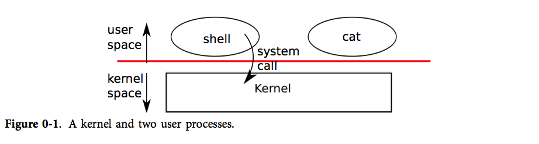
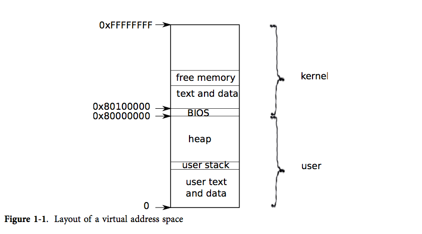
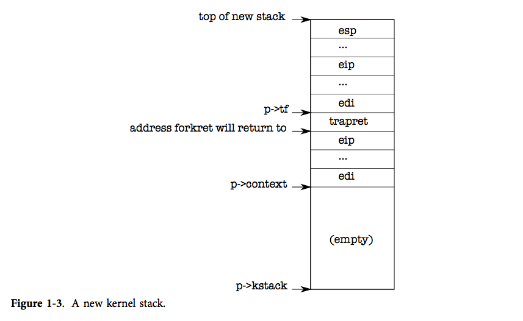
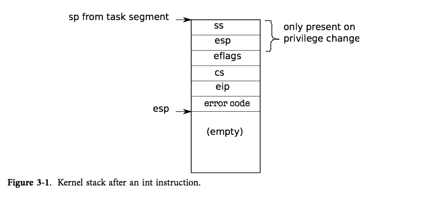
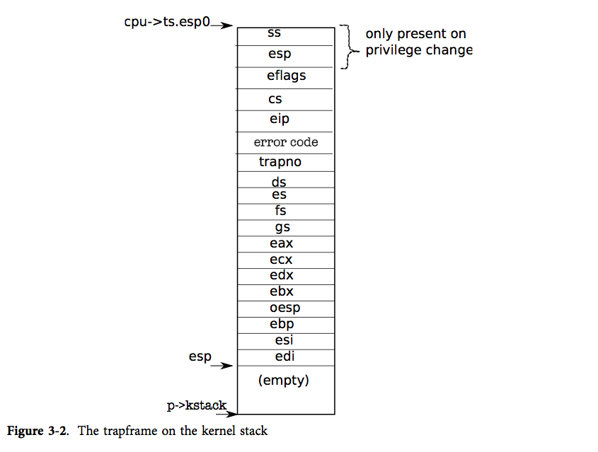
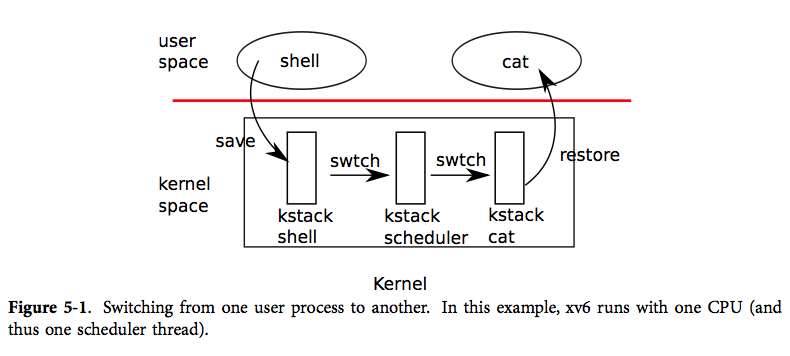
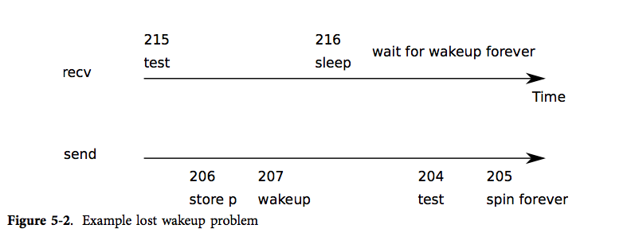
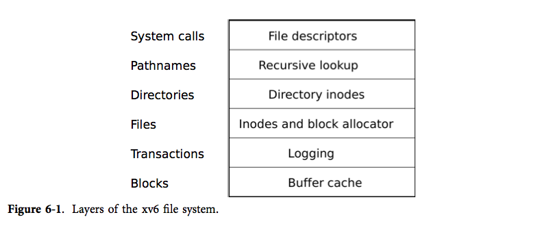
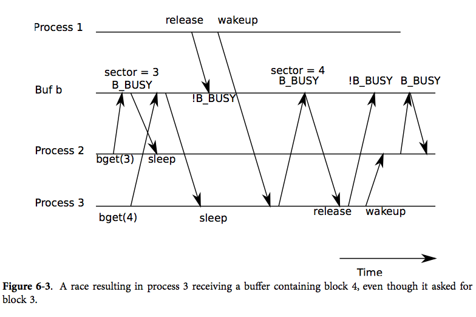

xv6速通
从xv6速通出发了解操作系统概貌
概论 系统调用
操作系统工作的主要概论：
- 将计算机的资源在多个程序间共享，并且给程序提供一系列比硬件本身更有用的服务。
- 管理并抽象底层硬件，举例来说，一个文字处理软件（比如 word）不用去关心自己使用的是何种硬盘。
- 多路复用硬件，使得多个程序可以(至少看起来是)同时运行的。
- 最后，给程序间提供一种受控的交互方式，使得程序之间可以共享数据、共同工作。
这就是操作系统的主要工作
操作系统的工作方式
实际上是完成初始化硬件和软件的工作之后就陷入一个loop，之后上层软件以require的方式向操作系统发出请求提供服务。比如说，当文件想要读写的时候他就需要去前往操作系统处申请服务。提供的服务就是系统调用。

进程通过系统调用使用内核服务。系统调用会进入内核，让内核执行服务然后返回。所以进程总是在用户空间和内核空间之间交替运行。
内核使用了 CPU 的硬件保护机制来保证用户进程只能访问自己的内存空间。内核拥有实现保护机制所需的硬件权限(hardware privileges)，而用户程序没有这些权限。每一次陷入内核，我们的特权级就会有相应的提升来完成高特权的操作
常见的系统调用与举例23
| 系统调用 | 描述 |
|---|---|
| fork() | 创建进程 |
| exit() | 结束当前进程 |
| wait() | 等待子进程结束 |
| kill(pid) | 结束 pid 所指进程 |
| getpid() | 获得当前进程 pid |
| sleep(n) | 睡眠 n 秒 |
| exec(filename, *argv) | 加载并执行一个文件 |
| sbrk(n) | 为进程内存空间增加 n 字节 |
| open(filename, flags) | 打开文件，flags 指定读/写模式 |
| read(fd, buf, n) | 从文件中读 n 个字节到 buf |
| write(fd, buf, n) | 从 buf 中写 n 个字节到文件 |
| close(fd) | 关闭打开的 fd |
| dup(fd) | 复制 fd |
| pipe( p) | 创建管道， 并把读和写的 fd 返回到p |
| chdir(dirname) | 改变当前目录 |
| mkdir(dirname) | 创建新的目录 |
| mknod(name, major, minor) | 创建设备文件 |
| fstat(fd) | 返回文件信息 |
| link(f1, f2) | 给 f1 创建一个新名字(f2) |
| unlink(filename) | 删除文件 |
这章表实际上就是集合了常见的Posix System Call
一个 xv6 进程由两部分组成:
一部分是用户内存空间（指令，数据，栈）, 另一部分是仅对内核可见的进程状态。
xv6 提供了分时特性：它在可用 CPU 之间不断切换，决定哪一个等待中的进程被执行。当一个进程不在执行时，xv6 保存它的 CPU 寄存器，当他们再次被执行时恢复这些寄存器的值。内核将每个进程和一个 pid (process identifier) 关联起来。
下面聊fork调用
一个进程可以通过系统调用 fork 来创建一个新的进程。fork 创建的新进程被称为子进程，子进程的内存内容同创建它的进程（父进程）一样。fork 函数在父进程、子进程中都返回（一次调用两次返回）。对于父进程它返回子进程的 pid，对于子进程它返回 0。
int pid;
pid = fork();
if(pid > 0){
printf("parent: child=%d\n", pid);
pid = wait();
printf("child %d is done\n", pid);
} else if(pid == 0){
printf("child: exiting\n");
exit();
} else {
printf("fork error\n");
} 这段代码来自xv6 cookbook，实际上就是想说一件事情，fork完全复制父进程，对于自身的pid而言总认为是0，所欲在这里fork产生的分歧之后，父进程眼里是pid > 0的，子进程眼里pid == 0。进程的退出没有一定的先后顺序，可以说是随机的。
系统调用 exec 将从某个文件（通常是可执行文件）里读取内存镜像，并将其替换到调用它的进程的内存空间。这份文件必须符合特定的格式，规定文件的哪一部分是指令，哪一部分是数据，哪里是指令的开始等等。xv6 使用 ELF 文件格式当exec执行成功后，它并不返回到原来的调用进程，而是从ELF头中声明的入口开始，执行从文件中加载的指令。exec 接受两个参数：可执行文件名和一个字符串参数数组。
xv6 通常隐式地分配用户的内存空间。fork 在子进程需要装入父进程的内存拷贝时分配空间，exec 在需要装入可执行文件时分配空间。一个进程在需要额外内存时可以通过调用 sbrk(n) 来增加 n 字节的数据内存。 sbrk 返回新的内存的地址。
xv6 没有用户这个概念当然更没有不同用户间的保护隔离措施。按照 Unix 的术语来说，所有的 xv6 进程都以 root 用户执行。
IO 和file descriptor
文件描述符是一个整数，它代表了一个进程可以读写的被内核管理的对象。进程可以通过多种方式获得一个文件描述符，如打开文件、目录、设备，或者创建一个管道（pipe），或者复制已经存在的文件描述符。简单起见，我们常常把文件描述符指向的对象称为“文件”。文件描述符的接口是对文件、管道、设备等的抽象，这种抽象使得它们看上去就是字节流。
每个进程都有一张表，而 xv6 内核就以文件描述符作为这张表的索引，所以每个进程都有一个从0开始的文件描述符空间。
按照惯例，进程从文件描述符0读入（标准输入），从文件描述符1输出（标准输出），从文件描述符2输出错误（标准错误输出）。我们会看到 shell 正是利用了这种惯例来实现 I/O 重定向。
shell 保证在任何时候都有3个打开的文件描述符（8007），他们是控制台（console）的默认文件描述符。
系统调用 read 和 write 从文件描述符所指的文件中读或者写 n 个字节。read(fd, buf, n) 从 fd 读最多 n 个字节（fd 可能没有 n 个字节），将它们拷贝到 buf 中，然后返回读出的字节数。每一个指向文件的文件描述符都和一个偏移关联。read 从当前文件偏移处读取数据，然后把偏移增加读出字节数。紧随其后的 read 会从新的起点开始读数据。当没有数据可读时，read 就会返回0，这就表示文件结束了。
write(fd, buf, n) 写 buf 中的 n 个字节到 fd 并且返回实际写出的字节数。如果返回值小于 n 那么只可能是发生了错误。就像 read 一样，write 也从当前文件的偏移处开始写，在写的过程中增加这个偏移。
系统调用 close 会释放一个文件描述符，使得它未来可以被 open, pipe, dup 等调用重用。一个新分配的文件描述符永远都是当前进程的最小的未被使用的文件描述符。
文件描述符和 fork 的交叉使用使得 I/O 重定向能够轻易实现。fork 会复制父进程的文件描述符和内存，所以子进程和父进程的文件描述符一模一样。exec 会替换调用它的进程的内存但是会保留它的文件描述符表。这种行为使得 shell 可以这样实现重定向：fork 一个进程，重新打开指定文件的文件描述符，然后执行新的程序。
管道
管道是一个小的内核缓冲区，它以文件描述符对的形式提供给进程，一个用于写操作，一个用于读操作。从管道的一端写的数据可以从管道的另一端读取。管道提供了一种进程间交互的方式。我们可以理解为进程交换数据的地方。
如果数据没有准备好，那么对管道执行的read会一直等待，直到有数据了或者其他绑定在这个管道写端口的描述符都已经关闭了。在后一种情况中，read 会返回 0，就像是一份文件读到了最后。读操作会一直阻塞直到不可能再有新数据到来了，这就是为什么我们在执行 wc 之前要关闭子进程的写端口。如果 wc 指向了一个管道的写端口，那么 wc 就永远看不到 eof 了。
xv6 shell 对管道的实现（比如 fork sh.c | wc -l）和上面的描述是类似的（7950行）。子进程创建一个管道连接管道的左右两端。然后它为管道左右两端都调用 runcmd，然后通过两次 wait 等待左右两端结束。管道右端可能也是一个带有管道的指令，如 a | b | c, 它 fork 两个新的子进程（一个 b 一个 c），因此，shell 可能创建出一颗进程树。树的叶子节点是命令，中间节点是进程，它们会等待左子和右子执行结束。理论上，你可以让中间节点都运行在管道的左端，但做的如此精确会使得实现变得复杂。
管道和临时文件起码有三个关键的不同点。
首先，管道会进行自我清扫，如果是 shell 重定向的话，我们必须要在任务完成后删除
/tmp/xyz。第二，管道可以传输任意长度的数据。
第三，管道允许同步：两个进程可以使用一对管道来进行二者之间的信息传递，每一个读操作都阻塞调用进程，直到另一个进程用
write完成数据的发送。
文件系统
xv6 文件系统提供文件和目录，文件就是一个简单的字节数组，而目录包含指向文件和其他目录的引用。xv6 把目录实现为一种特殊的文件。目录是一棵树，它的根节点是一个特殊的目录 root。/a/b/c 指向一个在目录 b 中的文件 c，而 b 本身又是在目录 a 中的，a 又是处在 root 目录下的。不从 / 开始的目录表示的是相对调用进程当前目录的目录，调用进程的当前目录可以通过 chdir 这个系统调用进行改变。
有很多的系统调用可以创建一个新的文件或者目录：mkdir 创建一个新的目录，open 加上 O_CREATE 标志打开一个新的文件，mknod 创建一个新的设备文件。mknod 在文件系统中创建一个文件，但是这个文件没有任何内容。相反，这个文件的元信息标志它是一个设备文件，并且记录主设备号和辅设备号（mknod 的两个参数），这两个设备号唯一确定一个内核设备。当一个进程之后打开这个文件的时候，内核将读、写的系统调用转发到内核设备的实现上，而不是传递给文件系统。
fstat 可以获取一个文件描述符指向的文件的信息。它填充一个名为 stat 的结构体，它在 stat.h 中定义为：
文件名和这个文件本身是有很大的区别。同一个文件（称为 inode）可能有多个名字，称为连接 (links)。系统调用 link 创建另一个文件系统的名称，它指向同一个 inode。
读写 a 就相当于读写 b。每一个 inode 都由一个唯一的 inode直接确定。在上面这段代码中，我们可以通过 fstat 知道 a 和 b 都指向同样的内容：a 和 b 都会返回同样的 inode 号（ino），并且 nlink 数会设置为2。
系统调用 unlink 从文件系统移除一个文件名。一个文件的 inode 和磁盘空间只有当它的链接数变为 0 的时候才会被清空，也就是没有一个文件再指向它。
xv6 关于文件系统的操作都被实现为用户程序，诸如 mkdir，ln，rm 等等。这种设计允许任何人都可以通过用户命令拓展 shell 。现在看起来这种设计是很显然的，但是 Unix 时代的其他系统的设计都将这样的命令内置在了 shell 中，而 shell 又是内置在内核中的。
有一个例外，那就是 cd，它是在 shell 中实现的（8016）。cd 必须改变 shell 自身的当前工作目录。如果 cd 作为一个普通命令执行，那么 shell 就会 fork 一个子进程，而子进程会运行 cd，cd 只会改变子进程的当前工作目录。父进程的工作目录保持原样。
进程 与 系统如何运行起来
第一个进程
下面聊进程。进程是一个计算机科学的抽象概念。它让一个程序可以假设它独占一台机器。进程向程序提供“看上去”私有的，其他进程无法读写的内存系统（或地址空间），以及一颗“看上去”仅执行该程序的CPU。

xv6 为每个进程维护了不同的页表，这样就能够合理地定义进程的地址空间了。（PS：页表就是一个负责将虚拟地址转换为实际地址的玩意）
一片地址空间包含了从虚拟地址0开始的用户内存。它的地址最低处放置进程的指令，接下来则是全局变量，栈区，以及一个用户可按需拓展的“堆”区（malloc 用）。
和上面提到的用户内存一样，内核的指令和数据也会被进程映射到每个进程的地址空间中。当进程使用系统调用时，系统调用实际上会在进程地址空间中的内核区域执行。这种设计使得内核的系统调用代码可以直接指向用户内存。为了给用户留下足够的内存空间，xv6 将内核映射到了地址空间的高地址处，即从 0x80100000 开始。
xv6 使用结构体 struct proc 来维护一个进程的众多状态。一个进程最为重要的状态是进程的页表，内核栈，当前运行状态。我们接下来会用 p->xxx 来指代 proc 结构中的元素。
/*
Per-process state（处理进程状态）
xv6 使用结构体 struct proc 来维护一个进程的众多状态。
*/
struct proc {
struct spinlock lock;
// p->lock must be held when using these:
enum procstate state; // Process state（指示了进程的状态：新建、准备运行、运行、等待 I/O 或退出状态中。）
void *chan; // If non-zero, sleeping on chan
int killed; // If non-zero, have been killed
int xstate; // Exit status to be returned to parent's wait
int pid; // Process ID（pid，进程号）
// proc_tree_lock must be held when using this:
struct proc *parent; // Parent process
// these are private to the process, so p->lock need not be held.
// 每个进程有两个栈：用户栈和内核栈(kstack)。当进程在执行用户指令时，只有它的用户栈在使用，而它的内核栈是空的。
// 当进程进入内核时（为了系统调用或中断），内核代码在进程的内核栈上执行；
// 当进程在内核中时，它的用户栈仍然包含保存的数据，但不被主动使用。
// 进程的线程在用户栈和内核栈中交替执行。内核栈是独立的（并且受到保护，不受用户代码的影响），所以即使一个进程用户栈被破坏了，内核也可以执行。
uint64 kstack; // Virtual address of kernel stack（内核栈的虚拟地址）
uint64 sz; // Size of process memory (bytes)
pagetable_t pagetable; // User page table
struct trapframe *trapframe; // data page for trampoline.S
struct context context; // swtch() here to run process
struct file *ofile[NOFILE]; // Open files
struct inode *cwd; // Current directory
char name[16]; // Process name (debugging)
}; 每个进程都有一个运行线程（或简称为线程）来执行进程的指令。线程可以被暂时挂起，稍后再恢复运行。系统在进程之间切换实际上就是挂起当前运行的线程，恢复另一个进程的线程。线程的大多数状态（局部变量和函数调用的返回地址）都保存在线程的栈上。
每个进程都有用户栈和内核栈（p->kstack）。当进程运行用户指令时，只有其用户栈被使用，其内核栈则是空的。然而当进程（通过系统调用或中断）进入内核时，内核代码就在进程的内核栈中执行；
进程处于内核中时，其用户栈仍然保存着数据，只是暂时处于不活跃状态。进程的线程交替地使用着用户栈和内核栈。要注意内核栈是用户代码无法使用的，这样即使一个进程破坏了自己的用户栈，内核也能保持运行。
当进程使用系统调用时，处理器转入内核栈中，提升硬件的特权级，然后运行系统调用对应的内核代码。当系统调用完成时，又从内核空间回到用户空间：降低硬件特权级，转入用户栈，恢复执行系统调用指令后面的那条用户指令。线程可以在内核中“阻塞”，等待 I/O, 在 I/O 结束后再恢复运行。
p->state 指示了进程的状态：新建、准备运行、运行、等待 I/O 或退出状态中。
p->pgdir 以 x86 硬件要求的格式保存了进程的页表。xv6 让分页硬件在进程运行时使用 p->pgdir。进程的页表还记录了保存进程内存的物理页的地址。

系统如何运行起来的？
当我们的电脑开机时，它会初始化自己然后从磁盘中载入 boot loader 到内存并运行。
然后，boot loader 把 xv6 内核从磁盘中载入并从 entry（1040）开始运行。x86 的分页硬件在此时还没有开始工作；所以这时的虚拟地址是直接映射到物理地址上的。
boot loader 把 xv6 内核装载到物理地址 0x100000 处。之所以没有装载到内核指令和内核数据应该出现的 0x80100000，是因为小型机器上很可能没有这么大的物理内存。而之所以在 0x100000 而不是 0x0 则是因为地址 0xa0000 到 0x100000 是属于 I/O 设备的。
为了让内核的剩余部分能够运行，entry 的代码设置了页表，将 0x80000000（称为 KERNBASE（0207））开始的虚拟地址映射到物理地址 0x0 处。注意，页表经常会这样把两段不同的虚拟内存映射到相同的一段物理内存
entry 中的页表的定义在 main.c（1311）中。页表项 0 将虚拟地址 0:0x400000 映射到物理地址 0:0x400000。（线性的映射）只要 entry 的代码还运行在内存的低地址处，我们就必须这样设置，但最后这个页表项是会被移除的。页表项将虚拟地址的 KERNBASE:KERNBASE+0x400000 映射到物理地址 0:0x400000。这个页表项将在 entry 的代码结束后被使用；它将内核指令和内核数据应该出现的高虚拟地址处映射到了 boot loader 实际将它们载入的低物理地址处。这个映射就限制内核的指令+代码必须在 4mb 以内。
让我们回到 entry 中继续页表的设置工作，它将 entrypgdir 的物理地址载入到控制寄存器 %cr3 中。分页硬件必须知道 entrypgdir 的物理地址，因为此时它还不知道如何翻译虚拟地址；它也还没有页表。entrypgdir 这个符号指向内存的高地址处，但只要用宏 V2P_WO（0220）减去 KERNBASE 便可以找到其物理地址。为了让分页硬件运行起来， xv6 会设置控制寄存器 %cr0 中的标志位 CR0_PG。
现在 entry 就要跳转到内核的 C 代码，并在内存的高地址中执行它了。首先它将栈指针 %esp 指向被用作栈的一段内存（1054）。所有的符号包括 stack 都在高地址，所以当低地址的映射被移除时，栈仍然是可用的。（这就是为什么我们的需要进行符号的转移）
最后 entry 跳转到高地址的 main 代码中。我们必须使用间接跳转，否则汇编器会生成 PC 相关的直接跳转（PC-relative direct jump），而该跳转会运行在内存低地址处的 main。 main 不会返回，因为栈上并没有返回 PC 值。好了，现在内核已经运行在高地址处的函数 main（1217）中了。
代码：创建第一个进程
在 main 初始化了一些设备和子系统后，它通过调用 userinit（1239）建立了第一个进程。userinit 首先调用 allocproc。allocproc（2205）的工作是在页表中分配一个槽（即结构体 struct proc），并初始化进程的状态，为其内核线程的运行做准备。
注意一点：
userinit仅仅在创建第一个进程时被调用，而allocproc创建每个进程时都会被调用。
allocproc 会在 proc 的表中找到一个标记为 UNUSED(2211-2213)的槽位。当它找到这样一个未被使用的槽位后，allocproc 将其状态设置为 EMBRYO，使其被标记为被使用的并给这个进程一个独有的 pid（2201-2219）。接下来，它尝试为进程的内核线程分配内核栈。如果分配失败了，allocproc 会把这个槽位的状态恢复为 UNUSED 并返回0以标记失败。

现在 allocproc 必须设置新进程的内核栈，allocproc 以巧妙的方式，使其既能在创建第一个进程时被使用，又能在 fork 操作时被使用。allocproc 为新进程设置好一个特别准备的内核栈和一系列内核寄存器，使得进程第一次运行时会“返回”到用户空间。
一个准备好的内核栈就像图表1-3展示的那样。可以看到自上而下的分别是必须要保存的寄存器的值等内容
allocproc 通过设置返回程序计数器的值，使得新进程的内核线程首先运行在 forkret 的代码中，然后返回到 trapret（2236-2241）中运行。内核线程会从 p->context 中拷贝的内容开始运行。所以我们可以通过将 p->context->eip 指向 forkret 从而让内核线程从 forkret（2533）的开头开始运行。这个函数会返回到那个时刻栈底的地址。context switch（2708）的代码把栈指针指向 p->context 结尾。allocproc 又将 p->context 放在栈上，并在其上方放一个指向 trapret 的指针；
这样运行完的 forkret 就会返回到 trapret 中了。 trapret 接着从栈顶恢复用户寄存器然后跳转到用户进程执行。这样的设置对于普通的 fork 和建立第一个进程都是适用的，虽然后一种情况进程会从用户空间的地址0处开始执行而非真正的从 fork 返回。
中断具体地说是系统调用、中断和异常。每当进程运行中要将控制权交给内核时，硬件和 xv6 的 trap entry 代码就会在进程的内核栈上保存用户寄存器。 userinit 把值写在新建的栈的顶部，使之就像进程是通过中断进入内核的一样（2264-2270）。所以用于从内核返回到用户代码的通用代码也就能适用于第一个进程。这些保存的值就构成了一个结构体 struct trapframe，其中保存的是用户寄存器。现在如图表1-3所示，进程的内核栈已经完全准备好了。
第一个进程会先运行一个小程序（initcode.S（7700）），于是进程需要找到物理内存来保存这段程序。程序不仅需要被拷贝到内存中，还需要页表来指向那段内存。
最初，userinit 调用 setupkvm（1737）来为进程创建一个只映射了内核区的页表。我们将在第2章学习该函数的具体细节。总之，setupkvm 和 userinit 创建了图表1-1所示的地址空间。
第一个进程内存中的初始内容是汇编过的 initcode.S；作为建立进程内核区的一步，链接器将这段二进制代码嵌入内核中并定义两个特殊的符号：_binary_initcode_start 和 _binary_initcode_size，用于表示这段代码的位置和大小。然后，userinit 调用 inituvm，分配一页物理内存，将虚拟地址0映射到那一段内存，并把这段代码拷贝到那一页中（1803）。
接下来，userinit 把 trap frame（0602）设置为用户模式：%cs 寄存器保存着一个段选择器，指向段 SEG_UCODE ，它处于特权级 DPL_USER（即在用户模式而非内核模式）。类似的，%ds, %es, %ss 的段选择器指向段 SEG_UDATA 并处于特权级 DPL_USER。%eflags 的 FL_IF 位被设置为允许硬件中断；我们将在第3章回头看这段代码。
栈指针 %esp 被设为了进程的最大有效虚拟内存地址，即 p->sz。指令指针则指向初始化代码的入口点，即地址0。
函数 userinit 把 p->name 设置为 initcode，这主要是为了方便调试。还要将 p->cwd 设置为进程当前的工作目录
一旦进程初始化完毕，userinit 将 p->state 设置为 RUNNABLE，使进程能够被调度。
运行第一个进程
现在第一个进程的状态已经被设置好了，让我们来运行它。在 main 调用了 userinit 之后， mpmain 调用 scheduler 开始运行进程（1267）。scheduler（2458）会找到一个 p->state 为 RUNNABLE 的进程 initproc，然后将 per-cpu 的变量 proc 指向该进程，接着调用 switchuvm 通知硬件开始使用目标进程的页表（1768）。注意，由于 setupkvm 使得所有的进程的页表都有一份相同的映射，指向内核的代码和数据，所以当内核运行时我们改变页表是没有问题的。switchuvm 同时还设置好任务状态段 SEG_TSS，让硬件在进程的内核栈中执行系统调用与中断。我们将在第3章研究任务状态段。
scheduler 接着把进程的 p->state 设置为 RUNNING，调用 swtch（2708），切换上下文到目标进程的内核线程中。swtch 会保存当前的寄存器，并把目标内核线程中保存的寄存器（proc->context）载入到 x86 的硬件寄存器中，其中也包括栈指针和指令指针。当前的上下文并非是进程的，而是一个特殊的 per-cpu 调度器的上下文。所以 scheduler 会让 swtch 把当前的硬件寄存器保存在 per-cpu 的存储（cpu->scheduler）中，而非进程的内核线程上下文中。最后的 ret（2727）指令从栈中弹出目标进程的 %eip，从而结束上下文切换工作。现在处理器就运行在进程 p 的内核栈上了。
allocproc 通过把 initproc 的 p->context->eip 设置为 forkret 使得 ret 开始执行 forkret 的代码。第一次被使用（也就是这一次）时，forkret（2533）会调用一些初始化函数。注意，我们不能在 main 中调用它们，因为它们必须在一个拥有自己的内核栈的普通进程中运行。接下来 forkret 返回。由于 allocproc 的设计，目前栈上在 p->context 之后即将被弹出的字是 trapret，因而接下来会运行 trapret，此时 %esp 保存着 p->tf。trapret（3027）用弹出指令从 trap frame（0602）中恢复寄存器，就像 swtch 对内核上下文的操作一样： popal 恢复通用寄存器，popl 恢复 %gs，%fs，%es，%ds。addl 跳过 trapno 和 errcode 两个数据，最后 iret 弹出 %cs，%eip，%flags，%esp，%ss。trap frame 的内容已经转移到 CPU 状态中，所以处理器会从 trap frame 中 %eip 的值继续执行。对于 initproc 来说，这个值就是虚拟地址0，即 initcode.S 的第一个指令。
这时 %eip 和 %esp 的值为0和4096，这是进程地址空间中的虚拟地址。处理器的分页硬件会把它们翻译为物理地址。allocuvm 为进程建立了页表，所以现在虚拟地址0会指向为该进程分配的物理地址处。allocuvm 还会设置标志位 PTE_U 来让分页硬件允许用户代码访问内存。userinit 设置了 %cs 的低位，使得进程的用户代码运行在 CPL = 3 的情况下，这意味着用户代码只能使用带有 PTE_U 设置的页，而且无法修改像 %cr3 这样的敏感的硬件寄存器。这样，处理器就受限只能使用自己的内存了。
第一个系统调用：exec
initcode.S 干的第一件事是触发 exec 系统调用。就像我们在第0章看到的一样，exec 用一个新的程序来代替当前进程的内存和寄存器，但是其文件描述符、进程 id 和父进程都是不变的。
initcode.S（7708）刚开始会将 $argv，$init，$0 三个值推入栈中，接下来把 %eax 设置为 SYS_exec 然后执行 int T_SYSCALL：这样做是告诉内核运行 exec 这个系统调用。如果运行正常的话，exec 不会返回：它会运行名为 $init 的程序，$init 是一个以空字符结尾的字符串，即 /init（7721-7723）。如果 exec 失败并且返回了，initcode 会循环调用一个不会返回的系统调用 exit 。
系统调用 exec 的参数是 $init、$argv。最后的0让这个手动构建的系统调用看起来就像普通的系统调用一样，我们会在第3章详细讨论这个问题。和之前的代码一样，xv6 努力避免为第一个进程的运行单独写一段代码，而是尽量使用通用于普通操作的代码。
概括地讲，它会从文件中获取的 /init 的二进制代码代替 initcode 的代码。现在 initcode 已经执行完了，进程将要运行 /init。 init（7810）会在需要的情况下创建一个新的控制台设备文件，然后把它作为描述符0，1，2打开。接下来它将不断循环，开启控制台 shell，处理没有父进程的僵尸进程，直到 shell 退出，然后再反复。系统就这样运行起来了。
页表
操作系统通过页表机制实现了对内存空间的控制。页表使得 xv6 能够让不同进程各自的地址空间映射到相同的物理内存上，还能够为不同进程的内存提供保护。
除此之外，我们还能够通过使用页表来间接地实现一些特殊功能。xv6 主要利用页表来区分多个地址空间，保护内存。另外，它也使用了一些简单的技巧，即把不同地址空间的多段内存映射到同一段物理内存（内核部分），在同一地址空间中多次映射同一段物理内存（用户部分的每一页都会映射到内核部分），以及通过一个没有映射的页保护用户栈。
分页硬件
回顾一下，x86 的指令（用户和内核均是如此）计算的都是虚拟地址。机器的 RAM，或者物理内存，则是用物理地址来作标记的。x86 的页表硬件通过映射机制将虚拟地址和物理地址联系起来。
一个 x86 页表就是一个包含 2^20（1,048,576）条页表条目（PTEs）的数组。每条 PTE 包含了一个 20 位的物理页号（PPN）及一些标志位。分页硬件要找到一个虚拟地址对应的 PTE，只需使用其高20位来找到该虚拟地址在页表中的索引，然后把其高 20 位替换为对应 PTE 的 PPN。而低 12 位是会被分页硬件原样复制的。因此在虚拟地址-物理地址的翻译机制下，页表可以为操作系统提供对一块块大小为 4096（2^12）字节的内存片，这样的一个内存片就是一页。

如图 2-1 所示，实际上，地址的翻译有两个步骤。一个页表在物理内存中像一棵两层的树。树的根是一个 4096 字节的页目录，其中包含了 1024 个类似 PTE 的条目，但其实每个条目是指向一个页表页的引用。而每个页表页又是包含 1024 个 32 位 PTE 的数组。分页硬件使用虚拟地址的高 10 位来决定对应页目录条目。
如果想要的条目已经放在了页目录中，分页硬件就会继续使用接下来的 10 位来从页表页中选择出对应的 PTE。否则，分页硬件就会抛出错误。通常情况下，大部分虚拟地址不会进行映射，而这样的二级结构就使得页目录可以忽略那些没有任何映射的页表页。
每个 PTE 都包含一些标志位，说明分页硬件对应的虚拟地址的使用权限。
PTE_P 表示 PTE 是否陈列在页表中：如果不是，那么一个对该页的引用会引发错误（也就是：不允许被使用）。
PTE_W 控制着能否对页执行写操作；如果不能，则只允许对其进行读操作和取指令。
PTE_U 控制着用户程序能否使用该页；如果不能，则只有内核能够使用该页。图 2-1 对此进行了说明。这些的标志位和页表硬件相关的结构体都在
mmu.h（0700）定义。
下面对一些名词作出解释。物理内存是指 DRAM 中的储存单元。每个字节的物理内存都有一个地址，称为物理地址。而虚拟地址则是程序所使用的。分页硬件会将程序发出的虚拟地址翻译为物理地址，然后发送给 DRAM 硬件以读写存储器。这一层面的讨论中我们仅仅考虑虚拟地址，暂不考虑虚拟内存。
进程地址空间
entry 中建立的页表已经产生了足够多的映射来让内核的 C 代码正常运行。但是 main 还是调用了 kvmalloc（1757） 立即转换到新的页表中，这是因为内核建立的页表更加精巧地映射了内存空间。

每个进程都有自己的页表，xv6 会在进程切换时通知分页硬件切换页表。如图表 2-2 所示，进程的用户内存从 0 开始，最多能够增长到 KERNBASE, 这使得一个进程最多只能使用 2GB 的内存。当进程向 xv6 要求更多的内存时，xv6 首先要找到空闲的物理页，然后把这些页对应的 PTE 加入该进程的页表中，并让 PTE 指向对应的物理页。xv6 设置了 PTE 中的 PTE_U 、PTE_W、PTE_P 标志位。大多数进程是用不完整个内存空间的；xv6 会把没有被使用的 PTE 的 PTE_P 标志位设为0。不同进程的页表将其用户内存映射到不同的物理内存中，因此每个进程就拥有了私有的用户内存。
xv6 在每个进程的页表中都包含了内核运行所需要的所有映射，而这些映射都出现在 KERNBASE 之上。它将虚拟地址 KERNBASE:KERNBASE+PHYSTOP 映射到 0:PHYSTOP。这样映射的原因之一是内核可以使用自己的指令和数据；原因之二是内核有时需要对物理页进行写操作，譬如在创建页表页的时候，而使得每一个物理页都在对应的虚拟地址上被映射就让这些操作变得很方便。这样的安排有一个缺点，即 xv6 无法使用超过 2GB 的物理内存。有一些使用内存映射的 I/O 设备的物理内存在 0xFE000000 之上，对于这些设备 xv6 页表采用了直接映射。KERNBASE 之上的页对应的 PTE 中，PTE_U 位均被置 0，因而只有内核能够使用这些页。
每个进程的页表同时包括用户内存和内核内存的映射，这样当用户通过中断或者系统调用转入内核时就不需要进行页表的转换了。大多数情况下，内核都没有自己的页表，所以内核几乎都是在借用用户进程的页表。
现在来回顾一下，xv6 保证了每个进程只能使用其自己的内存，并且每个进程所看到的内存都是从虚拟地址 0 开始的一段连续内存。对于一个进程，xv6 只把该进程所使用的内存对应的 PTE 的 PTE_U 设为 1，其他 PTE 则不然，这样就可以实现前者。对于后者，则是让页表把连续的虚拟页映射到实际分配的物理页。
代码：建立一个地址空间
main 调用 kvmalloc（1757），创建并切换到一个拥有内核运行所需的 KERNBASE 以上映射的页表。这里的大多数工作都是由 setupkvm（1737）完成的。首先，它会分配一页内存来放置页目录，然后调用 mappages 来建立内核需要的映射，这些映射可以在 kmap（1728）数组中找到。这里的映射包括内核的指令和数据，PHYSTOP 以下的物理内存，以及 I/O 设备所占的内存。setupkvm 不会建立任何用户内存的映射，这些映射稍后会建立。
mappages（1679）做的工作是在页表中建立一段虚拟内存到一段物理内存的映射。它是在页的级别，即一页一页地建立映射的。对于每一个待映射虚拟地址，mappages 调用 walkpgdir 来找到该地址对应的 PTE 地址。然后初始化该 PTE 以保存对应物理页号、许可级别（PTE_W 和/或 PTE_U）以及 PTE_P 位来标记该 PTE 是否是有效的（1691）。
walkpgdir（1654）模仿 x86 的分页硬件为一个虚拟地址寻找 PTE 的过程（见图表2-1）。walkpgdir 通过虚拟地址的前 10 位来找到在页目录中的对应条目（1659），如果该条目不存在，说明要找的页表页尚未分配；如果 alloc 参数被设置了，walkpgdir 会分配页表页并将其物理地址放到页目录中。最后用虚拟地址的接下来 10 位来找到其在页表中的 PTE 地址（1672）。
物理内存的分配
在运行时，内核需要为页表、进程的用户内存、内核栈及管道缓冲区分配空闲的物理内存。
xv6 使用从内核结尾到 PHYSTOP 之间的物理内存为运行时分配提供内存资源。每次分配，它会将整块 4096 字节大小的页分配出去。xv6 还会通过维护一个物理页组成的链表来寻找空闲页。所以，分配内存需要将页移出该链表，而释放内存需要将页加入该链表。
这里我们遇到了一个自举的问题：为了让分配器能够初始化该空闲链表，所有的物理内存都必须要建立起映射，但是建立包含这些映射的页表又必须要分配存放页表的页。xv6 通过在 entry 中使用一个特别的页分配器来解决这个问题。该分配器会在内核数据部分的后面分配内存。该分配器不支持释放内存，并受限于 entrypgdir 中规定的 4MB 分配大小。即便如此，该分配器还是足够为内核的第一个页表分配出内存。
代码：物理内存分配器
分配器中的数据结构是一个由可分配物理内存页构成的空闲链表。这个空闲页的链表的元素是结构体 struct run（2764）。那么分配器从哪里获得内存来存放这些数据结构呢？实际上，分配器将每个空闲页的 run 结构体保存在该空闲页本身中，因为空闲页中没有其他数据。分配器还用一个 spin lock（2764-2766）来保护空闲链表。链表和这个锁都封装在一个结构体中，这样逻辑就比较明晰：锁保护了该结构体中的域。不过现在让我们先忽略这个锁，以及对 acquire 和 release 的调用；我们会在第 4 章了解其细节。
main 函数调用了 kinit1 和 kinit2 两个函数对分配器进行初始化（2780）。这样做是由于 main 中的大部分代码都不能使用锁以及 4MB 以上的内存。kinit1 在前 4MB 进行了不需要锁的内存分配。而 kinit2 允许了锁的使用，并使得更多的内存可用于分配。原本应该由 main 决定有多少物理内存可用于分配，但在 x86 上很难实现。所以它假设机器中有 240MB（PHYSTOP）物理内存，并将内核末尾和 PHYSTOP 之间的内存都作为一个初始的空闲内存池。kinit1 和 kinit2 调用 freerange 将内存加入空闲链表中，freerange 则是通过对每一页调用 kfree 实现该功能。一个 PTE 只能指向一个 4096 字节对齐的物理地址（即是 4096 的倍数），因此 freerange 用 PGROUNDUP 来保证分配器只会释放对齐的物理地址。分配器原本一开始没有内存可用，正是对 kfree 的调用将可用内存交给了分配器来管理。
分配器用映射到高内存区域的虚拟地址找到对应的物理页，而非物理地址。所以 kinit 会使用 p2v(PHYSTOP)来将 PHYSTOP（一个物理地址）翻译为虚拟地址。分配器有时将地址看作是整型，这是为了对其进行运算（譬如在 kinit 中遍历所有页）；而有时将地址看作读写内存用的指针（譬如操作每个页中的 run 结构体）；对地址的双重使用导致分配器代码中充满了类型转换。另外一个原因是，释放和分配内存隐性地改变了内存的类型。
函数 kfree（2815）首先将被释放内存的每一字节设为 1。这使得访问已被释放内存的代码所读到的不是原有数据，而是垃圾数据；这样做能让这种错误的代码尽早崩溃。接下来 kfree 把 v 转换为一个指向结构体 struct run 的指针，在 r->next 中保存原有空闲链表的表头，然后将当前的空闲链表设置为 r。kalloc 移除并返回空闲链表的表头。
地址空间中的用户部分

图表 2-3 展示了在 xv6 中，一个运行中进程的用户内存结构。堆在栈之上，所以它可以增长（通过 sbrk）。栈占用了单独的一页内存，其中存有 exec 创建的初始数据。栈的最上方放着字符串形式的命令行参数以及指向这些参数的指针数组，其下方放的值使得一个程序可以从 main 开始，仿佛刚刚调用了函数 main(argc, argv)。为了防止栈使用了它不应该使用的页，栈的下方有一个保护页。保护页没有映射，因此当栈的增长超出其所在页时就会产生异常，因为无法翻译这个错误的地址。
代码：exec
exec 是创建地址空间中用户部分的系统调用。它根据文件系统中保存的某个文件来初始化用户部分。exec（5910）通过 namei（5920）打开二进制文件，这一点将在第 6 章进行解释。然后，它读取 ELF 头。xv6 应用程序以通行的 ELF 格式来描述，该格式在 elf.h 中定义。一个 ELF 二进制文件包括了一个 ELF 头，即结构体 struct elfhdr（0955），然后是连续几个程序段的头，即结构体 struct proghdr（0974）。每个 proghdr 都描述了需要载入到内存中的程序段。xv6 中的程序只有一个程序段的头，但其他操作系统中可能有多个。
exec 第一步是检查文件是否包含 ELF 二进制代码。一个 ELF 二进制文件是以4个“魔法数字”开头的，即 0x7F，“E”，“L”，“F”，或者写为宏 ELF_MAGIC（0952）。如果 ELF 头中包含正确的魔法数字，exec 就会认为该二进制文件的结构是正确的。
exec 通过 setupkvm（5931）分配了一个没有用户部分映射的页表，再通过 allocuvm（5943）为每个 ELF 段分配内存，然后通过 loaduvm（5945）把段的内容载入内存中。allocuvm 会检查请求分配的虚拟地址是否是在 KERNBASE 之下。 loaduvm（1818） 通过 walkpgdir 来找到写入 ELF 段的内存的物理地址；通过 readi 来将段的内容从文件中读出。
exec 创建的第一个用户程序 /init 程序段的头是这样的：
#objdump -p _init
_init: file format elf32-i386
Program Header:
LOAD off 0x00000054 vaddr 0x00000000 paddr 0x00000000 align 2**2
filesz 0x000008c0 memsz 0x000008cc flags程序段头中的 filesz 可能比 memsz 小，这表示中间相差的地方应该用 0 填充（对于 C 的全局变量）而不是继续从文件中读数据。对于 /init，filesz 是 2240 字节而 memsz 是 2252 字节。所以 allocuvm 会分配足够的内存来装 2252 字节的内容，但只从文件 /init 中读取 2240 字节的内容。
现在 exec 要分配以及初始化用户栈了。它只为栈分配一页内存。exec 一次性把参数字符串拷贝到栈顶，然后把指向它们的指针保存在 ustack 中。它还会在 main 参数列表 argv 的最后放一个空指针。这样，ustack 中的前三项就是伪造的返回 PC，argc 和 argv 指针了。
exec 会在栈的页下方放一个无法访问的页，这样当程序尝试使用超过一个页的栈时就会出错。另外，这个无法访问的页也让 exec 能够处理那些过于庞大的参数；当参数过于庞大时，exec 用于将参数拷贝到栈上的函数 copyout 会发现目标页无法访问，并且返回 -1。
在创建新的内存映像时，如果 exec 发现了错误，比如一个无效的程序段，它就会跳转到标记 bad 处，释放这段内存映像，然后返回 -1。exec 必须在确认该调用可以成功后才能释放原来的内存映像，否则，若原来的内存映像被释放，exec 甚至都无法向它返回 -1 了。exec 中的错误只可能发生在新建内存映像时。一旦新的内存映像建立完成，exec 就能装载新映像（5989）而把旧映像释放（5990）。最后，exec 成功地返回 0。
陷入，中断和驱动程序
运行进程时，cpu 一直处于一个大循环中：取指，更新 PC，执行，取指……。但有些情况下用户程序需要进入内核，而不是执行下一条用户指令。这些情况包括设备信号的发出、用户程序的非法操作（例如引用一个找不到页表项的虚拟地址）。处理这些情况面临三大挑战：1）内核必须使处理器能够从用户态转换到内核态（并且再转换回用户态）2）内核和设备必须协调好他们并行的活动。3）内核必须知道硬件接口的细节。解决这三个问题需要对硬件的深入理解和小心翼翼的编程，并且有可能导致难以理解的内核代码。这一章告诉你 xv6 是如何解决这些问题的。
系统调用，异常和中断
正如我们上一章最后所见，用户程序通过系统调用请求系统服务。术语exception指产生中断的非法程序操作，例如除以0，尝试访问 PTE 不存在的内存等等。术语interrupt指硬件产生的希望引起操作系统注意的信号，例如时钟芯片可能每100毫秒产生一个中断，以此来实现分时。再举一个例子，当硬盘读完一个数据块时，它会产生一个中断来提醒操作系统这个块已经准备好被获取了。
所有的中断都由内核管理，而不是进程。因为在大多数情况下只有内核拥有处理中断所需的特权和状态。例如为了使进程响应时钟中断而在进程间实现时间分片，就必须在内核中执行这些操作，因为我们有可能强迫进程服从处理器的调度。
在所有三种情况下，操作系统的设计必须保证下面这些事情。系统必须保存寄存器以备将来的状态恢复。系统必须准备好在内核中执行，必须选择一个内核开始执行的地方。内核必须能够获得关于这个事件的信息，例如系统调用的参数。同时还必须保证安全性；系统必须保持用户进程和系统进程的隔离。
为了达成这个目标操作系统必须知道硬件是如何处理系统调用、异常和中断的。在大多数处理器中这三种事件都用同样的硬件机制处理。比如说，在 x86 中，一个程序可以通过 int 指令产生一个中断来进行系统调用。同样的，异常也会产生一个中断。因此，如果操作系统能够处理中断，那么操作系统也可以处理系统调用以及异常。
我们的计划是这样的。中断终止正常的处理器循环然后开始执行中断处理程序中的代码。在开始中断处理程序之前，处理器保存寄存器，这样在操作系统从中断中返回时就可以恢复他们。切换到中断服务程序面临的问题是处理器需要在用户模式和内核模式之间切换。
X86 的保护机制
x86 有四个特权级，从 0（特权最高）编号到 3（特权最低）。在实际使用中，大多数的操作系统都使用两个特权级，0 和 3，他们被称为内核模式和用户模式。当前执行指令的特权级存在于 %cs 寄存器中的 CPL 域中。
在 x86 中，中断处理程序的入口在中断描述符表（IDT）中被定义。这个表有256个表项，每一个都提供了相应的 %cs 和 %eip。
一个程序要在 x86 上进行一个系统调用，它需要调用 int n 指令，这里 n 就是 IDT 的索引。int 指令进行下面一些步骤：
- 从 IDT 中获得第 n 个描述符，n 就是 int 的参数。
- 检查 %cs 的域 CPL <= DPL，DPL 是描述符中记录的特权级。
- 如果目标段选择符的 PL < CPL，就在 CPU 内部的寄存器中保存 %esp 和 %ss 的值。
- 从一个任务段描述符中加载 %ss 和 %esp。
- 将 %ss 压栈。
- 将 %esp 压栈。
- 将 %eflags 压栈。
- 将 %cs 压栈。
- 将 %eip 压栈。
- 清除 %eflags 的一些位。
- 设置 %cs 和 %eip 为描述符中的值。
int 指令是一个非常复杂的指令，可能有人会问是不是所有的这些操作都是必要的。检查 CPL <= DPL 使得内核可以禁止一些特权级系统调用。例如，如果用户成功执行了 int 指令，那么 DPL 必须是 3。如果用户程序没有合适的特权级，那么 int 指令就会触发 int 13，这是一个通用保护错误。再举一个例子，int 指令不能使用用户栈来保存值，因为用户可能还没有建立一个合适的栈，因此硬件会使用任务段中指定的栈（这个栈在内核模式中建立）。

图 3-1 展示了一个 int 指令之后的栈的情况，注意这是发生了特权级转换（即描述符中的特权级比 CPL 中的特权级低的时候）栈的情况。如果这条指令没有导致特权级转换，x86 就不会保存 %ss 和 %esp。（不需要单独再开堆栈保存）在任何一种情况下，%eip 都指向中断描述符表中指定的地址，这个地址的第一条指令就是将要执行的下一条指令，也是 int n 的中断处理程序的第一条指令。操作系统应该实现这些中断处理程序，之后我们会看到 xv6 干了些什么。
操作系统可以使用 iret 指令来从一个 int 指令中返回。它从栈中弹出 int 指令保存的值，然后通过恢复保存的 %eip 的值来继续用户程序的执行。
代码：第一个系统调用
第一章的最后在 initcode.S 中调用了一个系统调用。让我们再看一遍（7713）。这个进程将 exec 所需的参数压栈，然后把系统调用号存在 %eax 中。这个系统调用号和 syscalls 数组中的条目匹配，（syscall 是一个函数指针的数组）（3350）。我们需要设法使得 int 指令将处理器的状态从用户模式切换到内核模式，调用适当的内核函数（例如在这里是 sys_exec），并且使内核可以取出 sys_exec 的参数。
代码：汇编陷入处理程序
xv6 必须设置硬件在遇到 int 指令时进行一些特殊的操作，这些操作会使处理器产生一个中断。x86 允许 256 个不同的中断。中断 0-31 被定义为软件异常，比如除 0 错误和访问非法的内存页。xv6 将中断号 32-63 映射给硬件中断，并且用 64 作为系统调用的中断号。
Tvinit (3067) 在 main 中被调用，它设置了 idt 表中的 256 个表项。中断 i 被位于 vectors[i] 的代码处理。每一个中断处理程序的入口点都是不同的，因为 x86 并未把中断号传递给中断处理程序，使用 256 个不同的处理程序是区分这 256 种情况的唯一办法。
Tvinit 处理 T_SYSCALL，用户系统会调用 trap，特别地：它通过传递第二个参数值为 1 来指定这是一个陷阱门。陷阱门不会清除 FL 位，这使得在处理系统调用的时候也接受其他中断。同时也设置系统调用门的权限为 DPL_USER，这使得用户程序可以通过 int 指令产生一个内陷。xv6 不允许进程用 int 来产生其他中断（比如设备中断）；如果它们这么做了，就会抛出通用保护异常，也就是发出 13 号中断。
当特权级从用户模式向内核模式转换时，内核不能使用用户的栈，因为它可能不是有效的。用户进程可能是恶意的或者包含了一些错误，使得用户的 %esp 指向一个不是用户内存的地方。xv6 会使得在内陷发生的时候进行一个栈切换，栈切换的方法是让硬件从一个任务段描述符中读出新的栈选择符和一个新的 %esp 的值。函数 switchuvm（1773）把用户进程的内核栈顶地址存入任务段描述符中。
当内陷发生时，处理器会做下面一些事。如果处理器在用户模式下运行，它会从任务段描述符中加载 %esp 和 %ss，把老的 %ss 和 %esp 压入新的栈中。如果处理器在内核模式下运行，上面的事件就不会发生。处理器接下来会把 %eflags，%cs，%eip 压栈。对于某些内陷来说，处理器会压入一个错误字。而后，处理器从相应 IDT 表项中加载新的 %eip 和 %cs。
xv6 使用一个 perl 脚本（2950）来产生 IDT 表项指向的中断处理函数入口点。每一个入口都会压入一个错误码（如果 CPU 没有压入的话），压入中断号，然后跳转到 alltraps。
Alltraps（3004）继续保存处理器的寄存器：它压入 %ds, %es, %fs, %gs, 以及通用寄存器（3005-3010)。这么做使得内核栈上压入一个 trapframe（中断帧） 结构体，这个结构体包含了中断发生时处理器的寄存器状态（参见图3-2）。处理器负责压入 %ss，%esp，%eflags，%cs 和 %eip。处理器或者中断入口会压入一个错误码，而alltraps负责压入剩余的。中断帧包含了所有处理器从当前进程的内核态恢复到用户态需要的信息，所以处理器可以恰如中断开始时那样继续执行。回顾一下第一章，userinit通过手动建立中断帧来达到这个目标（参见图1-3）。

考虑第一个系统调用，被保存的 %eip 是 int 指令下一条指令的地址。%cs 是用户代码段选择符。%eflags 是执行 int 指令时的 eflags 寄存器，alltraps 同时也保存 %eax，它存有系统调用号，内核在之后会使用到它。
现在用户态的寄存器都保存了，alltraps 可以完成对处理器的设置并开始执行内核的 C 代码。处理器在进入中断处理程序之前设置选择符 %cs 和 %ss；alltraps 设置 %ds 和 %es（3013-3015）。它设置 %fs 和 %gs 来指向 SEG_KCPU（每个 CPU 数据段选择符）（3016-3018）。
一旦段设置好了，alltraps 就可以调用 C 中断处理程序 trap 了。它压入 %esp 作为 trap 的参数，%esp 指向刚在栈上建立好的中断帧（3021）。然后它调用 trap（3022）。trap 返回后，alltraps 弹出栈上的参数（3023）然后执行标号为 trapret 处的代码。我们在第一章阐述第一个用户进程的时候跟踪分析了这段代码，在那里第一个用户进程通过执行 trapret 处的代码来退出到用户空间。同样地事情在这里也发生：弹出中断帧会恢复用户模式下的寄存器，然后执行 iret 会跳回到用户空间。
现在我们讨论的是发生在用户模式下的中断，但是中断也可能发生在内核模式下。在那种情况下硬件不需要进行栈转换，也不需要保存栈指针或栈的段选择符；除此之外的别的步骤都和发生在用户模式下的中断一样，执行的 xv6 中断处理程序的代码也是一样的。而 iret 会恢复了一个内核模式下的 %cs，处理器也会继续在内核模式下执行。
C 中断处理程序
我们在上一节中看到每一个处理程序会建立一个中断帧然后调用 C 函数 trap。trap（3101）查看硬件中断号 tf->trapno 来判断自己为什么被调用以及应该做些什么。如果中断是 T_SYSCALL，trap 调用系统调用处理程序 syscall。我们会在第五章再来讨论这里的两个 cp->killed 检查。
当检查完是否是系统调用，trap 会继续检查是否是硬件中断（我们会在下面讨论）。中断可能来自硬件设备的正常中断，也可能来自异常的、未预料到的硬件中断。
如果中断不是一个系统调用也不是一个硬件主动引发的中断，trap 就认为它是一个发生中断前的一段代码中的错误行为导致的中断（如除零错误）。如果产生中断的代码来自用户程序，xv6 就打印错误细节并且设置 cp->killed 使之待会被清除掉。我们会在第五章看看 xv6 是怎样进行清除的。
如果是内核程序正在执行，那就出现了一个内核错误：trap 打印错误细节并且调用 panic。
系统调用
对于系统调用，trap 调用 syscall（3375）。syscall 从中断帧中读出系统调用号，中断帧也包括被保存的 %eax，以及到系统调用函数表的索引。对第一个系统调用而言，%eax 保存的是 SYS_exec（3207），并且 syscall 会调用第 SYS_exec 个系统调用函数表的表项，相应地也就调用了 sys_exec。
syscall 在 %eax 保存系统调用函数的返回值。当 trap 返回用户空间时，它会从 cp->tf 中加载其值到寄存器中。因此，当 exec 返回时，它会返回系统调用处理函数返回的返回值（3381）。系统调用按照惯例会在发生错误的时候返回一个小于 0 的数，成功执行时返回正数。如果系统调用号是非法的，syscall 会打印错误并且返回 -1。
之后的章节会讲解系统调用的实现。这一章关心的是系统调用的机制。还有一点点的机制没有说到：如何获得系统调用的参数。工具函数 argint、argptr 和 argstr 获得第 n 个系统调用参数，他们分别用于获取整数，指针和字符串起始地址。argint 利用用户空间的 %esp 寄存器定位第 n 个参数：%esp 指向系统调用结束后的返回地址。参数就恰好在 %esp 之上（%esp+4）。因此第 n 个参数就在 %esp+4+4*n。
argint 调用 fetchint 从用户内存地址读取值到 *ip。fetchint 可以简单地将这个地址直接转换成一个指针，因为用户和内核共享同一个页表，但是内核必须检验这个指针的确指向的是用户内存空间的一部分。内核已经设置好了页表来保证本进程无法访问它的私有地址以外的内存：如果一个用户尝试读或者写高于（包含）p->sz的地址，处理器会产生一个段中断，这个中断会杀死此进程，正如我们之前所见。但是现在，我们在内核态中执行，用户提供的任何地址都是有权访问的，因此必须要检查这个地址是在 p->sz 之下的。
argptr 和 argint 的目标是相似的：它解析第 n 个系统调用参数。argptr 调用 argint 来把第 n 个参数当做是整数来获取，然后把这个整数看做指针，检查它的确指向的是用户地址空间。注意 argptr 的源码中有两次检查。首先，用户的栈指针在获取参数的时候被检查。然后这个获取到得参数作为用户指针又经过了一次检查。
argstr 是最后一个用于获取系统调用参数的函数。它将第 n 个系统调用参数解析为指针。它确保这个指针是一个 NUL 结尾的字符串并且整个完整的字符串都在用户地址空间中。
系统调用的实现（例如，sysproc.c 和 sysfile.c）仅仅是封装而已：他们用 argint，argptr 和 argstr 来解析参数，然后调用真正的实现。在第一章，sys_exec 利用这些函数来获取参数。
中断
主板上的设备可以产生中断，xv6 必须配置硬件来处理这些中断。没有硬件的支持 xv6 不可能正常使用起来：用户不能够用键盘输入，没有一个能够存储数据的文件系统等等。幸运的是，添加一些简单设备的中断并不会增加太多额外的复杂性。正如我们将会见到的，中断可以使用与系统调用和异常处理相同的代码。
中断和系统调用相似，除了它可以在任何时候产生。主板上的硬件能够在需要的时候向 CPU 发出信号（例如用户在键盘上输入了一个字符）。我们得对设备编程来产生一个中断，然后令 CPU 接受它们的中断。
我们来看一看分时硬件和时钟中断。我们希望分时硬件大约以每秒 100 次的速度产生一个中断，这样内核就可以对进程进行时钟分片。100 次每秒的速度足以提供良好的交互性能并且同时不会使处理器进入不断的中断处理中。
像 x86 处理器一样，PC 主板也在进步，并且提供中断的方式也在进步。早期的主板有一个简单的可编程中断控制器（被称作 PIC），你可以在 picirq.c 中找到管理它的代码。
随着多核处理器主板的出现，需要一种新的处理中断的方式，因为每一颗 CPU 都需要一个中断控制器来处理发送给它的中断，而且也得有一个方法来分发中断。这一方式包括两个部分：
第一个部分是在 I/O 系统中的（IO APIC，ioapic.c）。
另一部分是关联在每一个处理器上的（局部 APIC，lapic.c）。xv6 是为搭载多核处理器的主板设计的，每一个处理器都需要编程接收中断。
为了在单核处理器上也能够正常运行，xv6 也为 PIC 编程（6932）。每一个 PIC 可以处理最多 8 个中断（设备）并且将他们接到处理器的中断引脚上。为了支持多于八个硬件，PIC 可以进行级联，典型的主板至少有两集级联。使用 inb 和 outb 指令，xv6 配置主 PIC 产生 IRQ 0 到 7，从 PIC 产生 IRQ 8 到 16。最初 xv6 配置 PIC 屏蔽所有中断。timer.c 中的代码设置时钟 1 并且使能 PIC 上相应的中断（7574）。这样的说法忽略了编写 PIC 的一些细节。这些 PIC（也包括 IOAPIC 和 LAPIC）的细节对本书来说并不重要，但是感兴趣的读者可以参考 xv6 源码引用的各设备的手册。
在多核处理器上，xv6 必须编写 IOAPIC 和每一个处理器的 LAPIC。IO APIC 维护了一张表，处理器可以通过内存映射 I/O 写这个表的表项，而非使用 inb 和 outb 指令。在初始化的过程中，xv6 将第 0 号中断映射到 IRQ 0，以此类推，然后把它们都屏蔽掉。不同的设备自己开启自己的中断，并且同时指定哪一个处理器接受这个中断。举例来说，xv6 将键盘中断分发到处理器 0（7516）。将磁盘中断分发到编号最大的处理器，你们将在下面看到。
时钟芯片是在 LAPIC 中的，所以每一个处理器可以独立地接收时钟中断。xv6 在 lapicinit（6651）中设置它。关键的一行代码是 timer（6664）中的代码，这行代码告诉 LAPIC 周期性地在 IRQ_TIMER（也就是 IRQ 0) 产生中断。第 6693 行打开 CPU 的 LAPIC 的中断，这使得 LAPIC 能够将中断传递给本地处理器。
处理器可以通过设置 eflags 寄存器中的 IF 位来控制自己是否想要收到中断。指令 cli 通过清除 IF 位来屏蔽中断，而 sti 又打开一个中断。xv6 在启动主 cpu（8412）和其他 cpu（1126）时屏蔽中断。每个处理器的调度器打开中断（2464）。为了控制一些特殊的代码片段不被中断，xv6 在进入这些代码片段之前关中断（例如 switchuvm（1773））。
xv6 在 idtinit（1265）中设置时钟中断触发中断向量 32（xv6 使用它来处理 IRQ 0）。中断向量 32 和中断向量 64（用于实现系统调用）的唯一区别就是 32 是一个中断门，而 64 是一个陷阱门。中断门会清除 IF，所以被中断的处理器在处理当前中断的时候不会接受其他中断。从这儿开始直到 trap 为止，中断执行和系统调用或异常处理相同的代码——建立中断帧。
当因时钟中断而调用 trap 时，trap 只完成两个任务：递增时钟变量的值（3064），并且调用 wakeup。我们将在第 5 章看到后者可能会使得中断返回到一个不同的进程。
驱动程序
驱动程序是操作系统中用于管理某个设备的代码：它提供设备相关的中断处理程序，操纵设备完成操作，操纵设备产生中断，等等。驱动程序可能会非常难写，因为它和它管理的设备同时在并发地运行着。另外，驱动程序必须要理解设备的接口（例如，哪一个 I/O 端口是做什么的），而设备的接口又有可能非常复杂并且文档稀缺。
xv6 的硬盘驱动程序给我们提供了一个良好的例子。磁盘驱动程序从磁盘上拷出和拷入数据。磁盘硬件一般将磁盘上的数据表示为一系列的 512 字节的块（亦称扇区）：扇区 0 是最初的 512 字节，扇区 1 是下一个，以此类推。为了表示磁盘扇区，操作系统也有一个数据结构与之对应。这个结构中存储的数据往往和磁盘上的不同步：可能还没有从磁盘中读出（磁盘正在读数据但是还没有完全读出），或者它可能已经被更新但还没有写出到磁盘。磁盘驱动程序必须保证 xv6 的其他部分不会因为不同步的问题而产生错误。
磁盘驱动程序
通过 IDE 设备可以访问连接到 PC 标准 IDE 控制器上的磁盘。IDE 现在不如 SCSI 和 SATA 流行，但是它的接口比较简单使得我们可以专注于驱动程序的整体结构而不是硬件的某个特别部分的细节。
磁盘驱动程序用结构体 buf（称为缓冲区）（3500）来表示一个磁盘扇区。每一个缓冲区表示磁盘设备上的一个扇区。域 dev 和 sector 给出了设备号和扇区号，域 data 是该磁盘扇区数据的内存中的拷贝。
域 flags 记录了内存和磁盘的联系：B_VALID 位代表数据已经被读入，B_DIRTY 位代表数据需要被写出。B_BUSY 位是一个锁；它代表某个进程正在使用这个缓冲区，其他进程必须等待。当一个缓冲区的 B_BUSY 位被设置，我们称这个缓冲区被锁住。
内核在启动时通过调用 main（1234）中的 ideinit（3851）初始化磁盘驱动程序。ideinit 调用 picenable 和 ioapicenable 来打开 IDE_IRQ 中断（3856-3857）。调用 picenable 打开单处理器的中断；ioapicenable 打开多处理器的中断，但只是打开最后一个 CPU 的中断（ncpu-1）：在一个双处理器系统上，CPU 1 专门处理磁盘中断。
接下来，ideinit 检查磁盘硬件。它最初调用 idewait（3858）来等待磁盘接受命令。PC 主板通过 I/O 端口 0x1f7 来表示磁盘硬件的状态位。idewait（3833）获取状态位，直到 busy 位（IDE_BSY）被清除，以及 ready 位（IDE_DRDY)被设置。
现在磁盘控制器已经就绪，ideinit 可以检查有多少磁盘。它假设磁盘 0 是存在的，因为启动加载器和内核都是从磁盘 0 加载的，但它必须检查磁盘 1。它通过写 I/O 端口 0x1f6 来选择磁盘 1 然后等待一段时间，获取状态位来查看磁盘是否就绪（3860-3867）。如果不就绪，ideinit 认为磁盘不存在。
ideinit 之后，就只能通过块高速缓冲（buffer cache）调用 iderw，iderw 根据标志位更新一个锁住的缓冲区。如果 B_DIRTY 被设置，iderw 将缓冲区的内容写到磁盘；如果 B_VALID 没有被设置，iderw 从磁盘中读出数据到缓冲区。
磁盘访问耗时在毫秒级，对于处理器来说是很漫长的。引导加载器发出磁盘读命令并反复读磁盘状态位直到数据就绪。这种轮询或者忙等待的方法对于引导加载器来说是可以接受的，因为没有更好的事儿可做。但是在操作系统中，更有效的方法是让其他进程占有 CPU 并且在磁盘操作完成时接受一个中断。iderw 采用的就是后一种方法，维护一个等待中的磁盘请求队列，然后用中断来指明哪一个请求已经完成。虽然 iderw 维护了一个请求的队列，简单的 IDE 磁盘控制器每次只能处理一个操作。磁盘驱动程序的原则是：它已将队首的缓冲区送至磁盘硬件；其他的只是在等待他们被处理。
iderw（3954）将缓冲区 b 送到队列的末尾（3967-3971）。如果这个缓冲区在队首，iderw 通过 idestart 将它送到磁盘上（3924-3926）；在其他情况下，一个缓冲区被开始处理当且仅当它前面的缓冲区被处理完毕。
idestart 发出关于缓冲区所在设备和扇区的读或者写操作，根据标志位的情况不同。如果操作是一个写操作，idestart 必须提供数据（3889）而在写出到磁盘完成后会发出一个中断。如果操作是一个读操作，则发出一个代表数据就绪的中断，然后中断处理程序会读出数据。注意 iderw 有一些关于 IDE 设备的细节，并且在几个特殊的端口进行读写。如果任何一个 outb 语句错误了，IDE 就会做一些我们意料之外的事。保证这些细节正确也是写设备驱动程序的一大挑战。
iderw 已经将请求添加到了队列中，并且会在必要的时候开始处理，iderw 还必须等待结果。就像我们之前讨论的，轮询并不是有效的利用 CPU 的办法。相反，iderw 睡眠，等待中断处理程序在操作完成时更新缓冲区的标志位（3978-3979）。当这个进程睡眠时，xv6 会调度其他进程来保持 CPU 处于工作状态。
最终，磁盘会完成自己的操作并且触发一个中断。trap 会调用 ideintr 来处理它（3124）。ideintr（3902）查询队列中的第一个缓冲区，看正在发生什么操作。如果该缓冲区正在被读入并且磁盘控制器有数据在等待，ideintr 就会调用 insl 将数据读入缓冲区（3915-3917）。现在缓冲区已经就绪了：ideintr 设置 B_VALID，清除 B_DIRTY，唤醒任何一个睡眠在这个缓冲区上的进程（3919-3922）。最终，ideintr 将下一个等待中的缓冲区传递给磁盘（3924-3926）。
锁
xv6 运行在多处理器上，即计算机上有多个单独执行代码的 CPU。这些 CPU 操作同一片地址空间并分享其中的数据结构；xv6 必须建立一种合作机制防止它们互相干扰。即使是在单个处理器上，xv6 也必须使用某些机制来防止中断处理程序与非中断代码之间互相干扰。xv6 为这两种情况使用了相同的低层概念：锁。锁提供了互斥功能，保证某个时间点只有一个 CPU 能持有锁。如果 xv6 只能在持有特定的锁时才能使用数据结构，那么就能保证同一时间只有一个 CPU 能使用这个数据结构。这样，我们就称这个锁保护了数据结构。
本章的其余部分将解释为何 xv6 需要锁，以及 xv6 是如何实现、使用锁的。我们需要重点注意的是在读代码时，你一定要问自己另一个处理器的存在是否会让这行代码无法达到期望的运行结果（因为另一个处理器也可能正在运行该行代码，或者另一行修改这个共享变量的代码），还要考虑如果这里执行一个中断处理程序，又会发生什么情况。与此同时，一定要记住一行 C 代码可能由多条机器指令组成，而另一个处理器或者中断可能在这些指令中间影响之。你不能假设这些代码是顺序执行的，也不能假设一个 C 指令是以原子操作执行的。并发使得考虑代码的正确性变得困难。
竞争条件
下面举一个例子说明为什么我们需要锁，考虑几个共享磁盘的处理器，例如 xv6 中的 IDE 磁盘。磁盘驱动会维护一个未完成磁盘请求的链表（3821），这样处理器可能会并发地向链表中加入新的请求（3954）。如果没有并发请求，你可以这样实现：
1 struct list{
2 int data;
3 struct list *next;
4 };
5
6 struct list *list = 0;
7
8 void
9 insert(int data)
10 {
11 struct list *l;
12
13 l = malloc(sizeof *l);
14 l->data = data;
15 l->next = list;
16 list = l;
17 }证明其正确性是数据结构与算法课中的练习。即使可以证明其正确性，实际上这种实现也是错误的，至少不能在多处理器上运行。如果两个不同的 CPU 同时执行 insert，可能会两者都运行到15行，而都未开始运行16行（见图表4-1）。这样的话，就会出现两个链表节点，并且 next 都被设置为 list。当两者都运行了16行的赋值后，后运行的一个会覆盖前运行的一个；于是先赋值的一个进程中添加的节点就丢失了。这种问题就被称为竞争条件。竞争问题在于它们的结果由 CPU 执行时间以及其内存操作的先后决定的，并且这个问题难以重现。例如，在调试 insert 时加入输出语句，就足以改变执行时间，使得竞争消失。

通常我们使用锁来避免竞争。锁提供了互斥，所以一时间只有一个 CPU 可以运行 insert；这就让上面的情况不可能发生。只需加入几行代码（未标号的）就能修改为正确的带锁代码：
6 struct list *list = 0;
struct lock listlock;
7
8 void
9 insert(int data)
10 {
11 struct list *l;
12
acquire(&listlock);
13 l = malloc(sizeof *l);
14 l->data = data;
15 l->next = list;
16 list = l;
release(&listlock);
17 }当我们说锁保护了数据时，是指锁保护了数据对应的一组不变量（invariant）。不变量是数据结构在操作中维护的一些状态。一般来说，操作的正确行为会取决于不变量是否为真。操作是有可能暂时破坏不变量的，但在结束操作之前必须恢复不变量。例如，在链表中，不变量即 list 指向链表中第一个节点，而每个节点的 next 指向下一个节点。insert 的实现就暂时破坏了不变量：第13行建立一个新链表元素 l，并认为 l 是链表中的第一个节点，但 l 的 next 还没有指向下一个节点（在第15行恢复了该不变量），而 list 也还没有指向 l（在第16行恢复了该不变量）。上面所说的竞争之所以发生，是因为可能有另一个 CPU 在这些不变量（暂时）没有被恢复的时刻运行了依赖于不变量的代码。恰当地使用锁就能保证一时间只有一个 CPU 操作数据结构，这样在不变量不正确时就不可能有其他 CPU 对数据结构进行操作了。
代码：锁
xv6 用结构体 struct spinlock（1401）。该结构体中的关键成员是 locked 。这是一个字，在锁可以被获得时值为0，而当锁已经被获得时值为非零。逻辑上讲，xv6 应该用下面的代码来获得锁：
21 void
22 acquire(struct spinlock *lk)
23 {
24 for(;;) {
25 if(!lk->locked) {
26 lk->locked = 1;
27 break;
28 }
29 }
30 }然而这段代码在现代处理器上并不能保证互斥。有可能两个（或多个）CPU 接连执行到第25行，发现 lk->locked 为0，然后都执行第26、27行拿到了锁。这时，两个不同的 CPU 持有锁，违反了互斥。这段代码不仅不能帮我们避免竞争条件，它本身就存在竞争。这里的问题主要出在第25、26行是分开执行的。若要保证代码的正确，就必须让第25、26行成为一个原子操作。
为了让这两行变为原子操作， xv6 采用了386硬件上的一条特殊指令 xchg（0569）。在一个原子操作里，xchg 交换了内存中的一个字和一个寄存器的值。函数 acquire（1474）在循环中反复使用 xchg；每一次都读取 lk->locked 然后设置为1（1483）。如果锁已经被持有了，lk->locked 就已经为1了，故 xchg 会返回1然后继续循环。如果 xchg 返回0，但是 acquire 已经成功获得了锁，即 locked 已经从0变为了1，这时循环可以停止了。一旦锁被获得了，acquire 会记录获得锁的 CPU 和栈信息，以便调试。当某个进程获得了锁却没有释放时，这些信息可以帮我们找到问题所在。当然这些信息也被锁保护着，只有在持有锁时才能修改。
函数 release（1502）则做了相反的事：清除调试信息并释放锁。
模块化与递归锁
系统设计力求简单、模块化的抽象：最好是让调用者不需要了解被调者的具体实现。锁的机制则和这种模块化理念有所冲突。例如，当 CPU 持有锁时，它不能再调用另一个试图获得该锁的函数 f：因为调用者在 f 返回之前无法释放锁，如果 f 试图获得这个锁，就会造成死锁。
现在还没有一种透明方案可以让调用者和被调者互相隐藏所使用的锁。一个常见、透明但不甚理想的解决方案是递归锁（recursive locks），它使得被调者能够再次获得调用者已经持有的锁。这种方案的问题在于递归锁不能用来保护不变量。在 insert 调用 acquire(&listlock)后，它就可以假设没有其他函数会持有这个锁，也没有其他函数可以操作链表，最重要的是，可以保持链表相关的所有不变量。 在使用递归锁的系统中，insert 调用 acquire 之后不能做出任何假设：也许 acquire 之所以能成功，仅仅是因为 insert 的调用者之一持有锁，并正在修改链表数据。这时的不变量有可能被破坏了，链表也就不再保护其不变量了。锁不仅要让不同的 CPU 不会互相干扰，还需要让调用者与被调者不会互相干扰；而递归锁就无法保证这一点。
由于没有理想、透明的解决方法，我们不得不在函数的使用规范中加入锁。编程者必须保证一个函数不会在持有锁时调用另一个需要获得该锁的函数 f。就这样，锁也成为了我们的抽象中的一员。
代码：使用锁
xv6 非常谨慎地使用锁来避免竞争条件。一个简单的例子就是 IDE 驱动（3800）。就像本章开篇提到的一样，iderw（3954）有一个磁盘请求的队列，处理器可能会并发地向队列中加入新请求（3969）。为了保护链表以及驱动中的其他不变量，iderw 会请求获得锁 idelock（3965）并在函数末尾释放锁。练习1中研究了如何通过把 acquire 移动到队列操作之后来触发竞争条件。我们很有必要做这个练习，它会让我们了解到想要触发竞争并不容易，也就是说很难找到竞争条件。 也许xv6 的代码中就潜藏着一些竞争。
使用锁的一个难点在于要决定使用多少个锁，以及每个锁保护哪些数据、不变量。不过有几个基本原则。首先，当一个 CPU 正在写一个变量，而同时另一个 CPU 可能读/写该变量时，需要用锁防止两个操作重叠。第二，当用锁保护不变量时，如果不变量涉及到多个数据结构，通常所有这些数据结构需要作为整体用单个锁保护起来，这样才能维持不变量。
上面只说了需要锁的原则，那么什么时候不需要锁呢？由于锁会降低并发度，所以我们一定要避免过度使用锁。当效率不是很重要的时候，可以使用单处理器计算机，这样就完全不用考虑锁了。对于保护内核的数据结构，其实使用单个锁就足够了，当进入内核时必须持有该锁，而退出内核时就释放该锁。许多单处理器操作系统就用这种方法运行在了多处理器上，有时这种方法被称为“大内核锁（giant kernel lock）”，但使用这种方法就牺牲了并发性：即一时间只有一个 CPU 可以运行在内核上。如果我们想要依靠内核做大量的计算，那么使用一组更为精细的锁来让内核可以在多个 CPU 上同时运行会更有效率。
最后，对于锁的粒度选择是并行编程中的一个重要问题。xv6 只使用了几个简单的锁；例如，xv6 中使用了一个单独的锁来保护进程表及其不变量，我们将在第5章讨论这个问题。更精细的做法是给进程表中的每一个条目都上一个锁，这样在不同条目上运行的线程也能并行了。然而，当一个操作需要维持关于整个进程表的不变量时，这样的做法会让情况变得很复杂，因为此时它可能需要持有多个锁。但愿 xv6 中的例子已经足够让我们了解如何使用锁了。
锁的顺序
如果一段代码要使用多个锁，那么必须要注意代码每次运行都要以相同的顺序获得锁，否则就有死锁的危险。假设某段代码的两条执行路径都需要锁 A 和 B，但路径1获得锁的顺序是 A、B，而路径2获得锁的顺序是 B、A。这样就有能路径1获得了锁 A，而在它继续获得锁 B 之前，路径2获得了锁 B，这样就死锁了。这时两个路径都无法继续执行下去了，因为这时路径1需要锁 B，但锁 B已经在路径2手中了，反之路径2也得不到锁 A。为了避免这种死锁，所有的代码路径获得锁的顺序必须相同。避免死锁也是我们把锁作为函数使用规范的一部分的原因：调用者必须以固定顺序调用函数，这样函数才能以相同顺序获得锁。
由于 xv6 本身比较简单，它使用的锁也很简单，所以 xv6 几乎没有锁的使用链。最长的锁链也就只有两个锁。例如，ideintr 在调用 wakeup 时持有 ide 锁，而 wakeup 又需要获得 ptable.lock。还有很多使用 sleep/wakeup 的例子，它们要考虑锁的顺序是因为 sleep 和 wakeup 中有比较复杂的不变量，我们会在第5章讨论。文件系统中有很多两个锁的例子，例如文件系统在删除一个文件时必须持有该文件及其所在文件夹的锁。xv6 总是首先获得文件夹的锁，然后再获得文件的锁。
中断处理程序
xv6 用锁来防止中断处理程序与另一个 CPU 上运行非中断代码使用同一个数据。例如，时钟中断（3114）会增加 ticks 但可能有另一个 CPU 正在运行 sys_sleep，其中也要使用该变量（3473）。锁 tickslock 就能够为该变量实现同步。
即使在单个处理器上，中断也可能导致并发：在允许中断时，内核代码可能在任何时候停下来，然后执行中断处理程序。假设 iderw 持有 idelock，然后中断发生，开始运行 ideintr。ideintr 会试图获得 idelock，但却发现 idelock 已经被获得了，于是就等着它被释放。这样，idelock 就永远不会被释放了，只有 iderw 能释放它，但又只有让 ideintr 返回 iderw 才能继续运行，这样处理器、整个系统都会死锁。
为了避免这种情况，当中断处理程序会使用某个锁时，处理器就不能在允许中断发生时持有锁。xv6 做得更决绝：允许中断时不能持有任何锁。它使用 pushcli（1555）和 popcli（1566）来屏蔽中断（cli 是 x86 屏蔽中断的指令）。acquire 在尝试获得锁之前调用了 pushcli（1476），release 则在释放锁后调用了 popcli（1521）。pushcli（1555）和 popcli（1566）不仅包装了 cli 和 sti，它们还做了计数工作，这样就需要调用两次 popcli 来抵消两次 pushcli；这样，如果代码中获得了两个锁，那么只有当两个锁都被释放后中断才会被允许。
acquire 一定要在可能获得锁的 xchg 之前调用 pushcli（1483）。如果两者颠倒了，就可能在几个时钟周期里，中断仍被允许，而锁也被获得了，如果此时不幸地发生了中断，系统就会死锁。类似的，release 也一定要在释放锁的 xchg 之后调用 popcli（1483）。
另外，中断处理程序和非中断代码对彼此的影响也让我们看到了递归锁的缺陷。如果 xv6 使用了递归锁（即如果 CPU 获得了某个锁，那么同一 CPU 上可以再次获得该锁），那么中断处理程序就可能在非中断代码正运行到临界区时运行，这样就非常混乱了。当中断处理程序运行时，它所依赖的不变量可能暂时被破坏了。例如，ideintr（3902）会假设未处理请求链表是完好的。若 xv6 使用了递归锁，ideintr 就可能在 iderw 正在修改链表时运行，链表最终将陷入不正常的状态。
内存乱序
在本章中，我们都假设了处理器会按照代码中的顺序执行指令。但是许多处理器会通过指令乱序来提高性能。如果一个指令需要多个周期完成，处理器会希望这条指令尽早开始执行，这样就能与其他指令交叠，避免延误太久。例如，处理器可能会发现一系列 A、B 指令序列彼此并没有关系，在 A 之前执行 B 可以让处理器执行完 A 时也执行完 B。但是并发可能会让这种乱序行为暴露到软件中，导致不正确的结果。
例如，考虑在 release 中把0赋给 lk->locked 而不是使用 xchg。那么结果就不明确了，因为我们难以保证这里的执行顺序。比方说如果 lk->locked=0 在乱序后被放到了 popcli 之后，可能在锁被释放之前，另一个线程中就允许中断了，acquire 就会被打断。为了避免乱序可能造成的不确定性，xv6 决定使用稳妥的 xchg，这样就能保证不出现乱序了。
调度
任何操作系统都可能碰到进程数多于处理器数的情况，这样就需要考虑如何分享处理器资源。理想的做法是让分享机制对进程透明。通常我们对进程造成一个自己独占处理器的假象，然后让操作系统的多路复用机制（multiplex）将单独的一个物理处理器模拟为多个虚拟处理器。本章将讲述 xv6 是如何为多个进程模拟出多处理器的。
多路复用
xv6 中多路复用的实现如下：
当一个进程等待磁盘请求时，xv6 使之进入睡眠状态，然后调度执行另一个进程。另外，当一个进程耗尽了它在处理器上运行的时间片（100毫秒）后，xv6 使用时钟中断强制它停止运行，这样调度器才能调度运行其他进程。这样的多路复用机制为进程提供了独占处理器的假象，类似于 xv6 使用内存分配器和页表硬件为进程提供了独占内存的假象。
实现多路复用有几个难点。
首先，应该如何从运行中的一个进程切换到另一个进程？xv6 采用了普通的上下文切换机制；虽然这里的思想是非常简洁明了的，但是其代码实现是操作系统中最晦涩难懂的一部分。
第二，如何让上下文切换透明化？xv6 只是简单地使用时钟中断处理程序来驱动上下文切换。
第三，可能出现多个 CPU 同时切换进程的情况，那么我们必须使用一个带锁的方案来避免竞争。
第四，进程退出时必须释放其占用内存与资源，但由于它本身在使用自己的资源（譬如其内核栈），所以不能由该进程本身释放其占有的所有资源。xv6 希望能够简洁明了地处理这些难点，不过最后其代码实现还是比较“巧妙”。
xv6 必须为进程提供互相协作的方法。譬如，父进程需要等待子进程结束，以及读取管道数据的进程需要等待其他进程向管道中写入数据。与其让这些等待中的进程消耗 CPU 资源，不如让它们暂时放弃 CPU，进入睡眠状态来等待其他进程发出事件来唤醒它们。但我们必须要小心设计以防睡眠进程遗漏事件通知。本章我们将用管道机制的具体实现来解释上述问题及其解决方法。
代码：上下文切换
如图表5-1所示，xv6 在低层次中实现了两种上下文切换：从进程的内核线程切换到当前 CPU 的调度器线程，从调度器线程到进程的内核线程。xv6 永远不会直接从用户态进程切换到另一个用户态进程；这种切换是通过用户态-内核态切换（系统调用或中断）、切换到调度器、切换到新进程的内核线程、最后这个陷入返回实现的。本节我们将以内核线程与调度器线程的切换作为例子来说明。

每个 xv6 进程都有自己的内核栈以及寄存器集合。每个 CPU 都有一个单独的调度器线程，这样调度就不会发生在进程的内核线程中，而是在此调度器线程中。线程的切换涉及到了保存旧线程的 CPU 寄存器，恢复新线程之前保存的寄存器；其中 %esp 和 %eip 的变换意味着 CPU 会切换运行栈与运行代码。
swtch 并不了解线程，它只是简单地保存和恢复寄存器集合，即上下文。当进程让出 CPU 时，进程的内核线程调用 swtch 来保存自己的上下文然后返回到调度器的上下文中。每个上下文都是以结构体 struct context* 表示的，这实际上是一个保存在内核栈中的指针。swtch 有两个参数：struct context **old、struct context *new。它将当前 CPU 的寄存器压入栈中并将栈指针保存在 *old 中。然后 swtch 将 new 拷贝到 %esp 中，弹出之前保存的寄存器，然后返回。
接下来我们先不考察调度器调用 swtch 的过程，我们先回到用户进程中看看。在第3章中我们知道，有可能在中断的最后，trap 会调用 yield。yield 又调用 sched，其中 sched 会调用 swtch 来保存当前上下文到 proc->context 中然后切换到之前保存的调度器上下文 cpu->scheduler（2516）。
swtch（2702）一开始从栈中弹出参数，放入寄存器 %eax 和 %edx（2709-2710）中；swtch 必须在改变栈指针以及无法获得 %esp 前完成这些事情。然后 swtch 压入寄存器，在当前栈上建立一个新的上下文结构。仅有被调用者保存的寄存器此时需要被保存；按照 x86 的惯例即 %ebp %ebx %esi %edi %esp。swtch 显式地压入前四个寄存器（2713-2716）；最后一个则是在 struct context* 被写入 old（2719）时隐式地保存的。要注意，还有一个重要的寄存器，即程序计数器 %eip，该寄存器在使用 call 调用 swtch 时就保存在栈中 %ebp 之上的位置上了。保存了旧寄存器后，swtch 就准备要恢复新的寄存器了。它将指向新上下文的指针放入栈指针中（2720）。新的栈结构和旧的栈相同，因为新的上下文其实是之前某次的切换中的旧上下文。所以 swtch 就能颠倒一下保存旧上下文的顺序来恢复新上下文。它弹出 %edi %esi %ebx %ebp 然后返回（2723-2727）。由于 swtch 改变了栈指针，所以这时恢复的寄存器就是新上下文中的寄存器值。
在我们的例子中，sched 调用 swtch 切换到 cpu->scheduler，即 per-cpu 的调度器上下文。这个上下文是在之前 scheduler 调用 swtch（2478）时保存的。当 swtch 返回时，它不会返回到 sched 中，而是返回到 scheduler，其栈指针指向了当前 CPU 的调度器的栈，而非 initproc 的内核栈。
代码：调度
上一节中我们查看了 swtch 的底层细节；现在让我们将 swtch 看做一个既有的功能，来研究从进程到调度器然后再回到进程的切换过程中的一些约定。进程想要让出 CPU 必须要获得进程表的锁 ptable.lock，并释放其拥有的其他锁，修改自己的状态（proc->state），然后调用 sched。yield（2522）和 sleep exit 都遵循了这个约定，我们稍后将会详细研究。sched 检查了两次状态（2507-2512），这里的状态表明由于进程此时持有锁，所以 CPU 应该是在中断关闭的情况下运行的。最后，sched 调用 swtch 把当前上下文保存在 proc->context 中然后切换到调度器上下文即 cpu->scheduler 中。swtch 返回到调度器栈中，就像是调度器调用的 swtch 返回了一样（2478）。调度器继续其 for 循环，找到一个进程来运行，切换到该进程，然后继续轮转。
我们看到，在对 swtch 的调用的整个过程中，xv6 都持有锁 ptable.lock：swtch 的调用者必须持有该锁，并将锁的控制权转移给切换代码。锁的这种使用方式很少见，通常来说，持有锁的线程应该负责释放该锁，这样更容易让我们理解其正确性。但对于上下文切换来说，我们必须使用这种方式，因为 ptable.lock 会保证进程的 state 和 context 在运行 swtch 时保持不变。如果在 swtch 中没有持有 ptable.lock，可能引发这样的问题：在 yield 将某个进程状态设置为 RUNNABLE 之后，但又是在 swtch 让它停止在其内核栈上运行之前，有另一个 CPU 要运行该进程。其结果将是两个 CPU 都运行在同一个栈上，这显然是不该发生的。
内核线程只可能在 sched 中让出处理器，在 scheduler 中切换回对应的地方，当然这里 scheduler 也是通过 sched 切换到进程中的。所以，如果要写出 xv6 中切换线程的代码行号，我们会发现其执行规律是（2478），（2516），（2478），（2516），不断循环。以这种形式在两个线程之间切换的过程有时被称作共行程序（coroutines）；在此例中，sched 和 scheduler 就是彼此的共行程序。
但在一种特殊情况下，调度器调用的切换到新进程的 swtch 不会在 sched 中结束。我们在第2章学到了这个例子：当一个新进程第一次被调度时，它从 forkret（2533）开始运行。之所以要运行 forkret，只是为了按照惯例释放 ptable.lock；否则，这个新进程是可以就从 trapret 开始运行的。
scheduler（2458）运行了一个普通的循环：找到一个进程来运行，运行直到其停止，然后继续循环。scheduler 大部分时间里都持有 ptable.lock，但在每次外层循环中都要释放该锁（并显式地允许中断）。当 CPU 闲置（找不到 RUNNABLE 的进程）时这样做十分有必要。如果一个闲置的调度器一直持有锁，那么其他 CPU 就不可能执行上下文切换或任何和进程相关的系统调用了，也就更不可能将某个进程标记为 RUNNABLE 然后让闲置的调度器能够跳出循环了。而之所以周期性地允许中断，则是因为可能进程都在等待 I/O，从而找不到一个 RUNNABLE 的进程（例如 shell）；如果调度器一直不允许中断，I/O 就永远无法到达了。
scheduler 不断循环寻找可运行，即 p->state == RUNNABLE 的进程。一旦它找到了这样的进程，就将 per-cpu 的当前进程变量 proc 设为该进程，用 switchuvm 切换到该进程的页表，标记该进程为 RUNNING，然后调用 swtch 切换到该进程中运行（2472-2478）。
下面我们来从另一个层面研究这段调度代码。对于每个进程，调度维护了进程的一系列固定状态，并且保证当状态变化时必须持有锁 ptable.lock。第一个固定状态是，如果进程为 RUNNING 的，那么必须确保使用时钟中断的 yield 时，能够无误地切换到其他进程；这就意味着 CPU 寄存器必须保存着进程的寄存器值（这些寄存器值并非在 context 中），%cr3 必须指向进程的页表，%esp 则要指向进程的内核栈，这样 swtch 才能正确地向栈中压入寄存器值，另外 proc 必须指向进程的 proc[] 槽中。另一个固定状态是，如果进程是 RUNNABLE，必须保证调度器能够无误地调度执行该进程；这意味着 p->context 必须保存着进程的内核线程变量，并且没有任何 CPU 此时正在其内核栈上运行，没有任何 CPU 的 %cr3 寄存器指向进程的页表，也没有任何 CPU 的 proc 指向该进程。
正是由于要坚持以上两个原则，所以 xv6 必须在一个线程中获得 ptable.lock（通常是在 yield 中），然后在另一个线程中释放这个锁（在调度器线程或者其他内核线程中）。如果一段代码想要将运行中进程的状态修改为 RUNNABLE，那么在恢复到固定状态中之前持有锁；最早的可以释放锁的时机是在 scheduler 停止使用该进程页表并清空 proc 时。类似地，如果 scheduler 想把一个可运行进程的状态修改为 RUNNING，在该进程的内核线程完全运行起来（swtch 之后，例如在 yield 中）之前必须持有锁。
除此之外，ptable.lock 也保护了一些其他的状态：进程 ID 的分配，进程表槽的释放，exit 和 wait 之间的互动，保证对进程的唤醒不会被丢失等等。我们应该思考一下 ptable.lock 有哪些不同的功能可以分离，使之更为简洁高效。
睡眠与唤醒
锁的机制使得 CPU 之间，进程之间不会互相打扰；调度使得进程可以共享 CPU。但是现在我们还不知道进程之间是如何交换信息的。睡眠和唤醒实际上就提供了进程间通信的机制，它们可以让一个进程暂时休眠，等待某个特定事件的发生，然后当特定事件发生时，另一个进程会唤醒该进程。睡眠与唤醒通常被称为顺序合作（sequence coordination）或者有条件同步（conditional synchronization）机制，在操作系统的哲学中，还有很多类似的机制。
为了说明，假设有一个生产者/消费者队列。这个队列有些类似于 IDE 驱动用来同步处理器和设备驱动的队列（见第3章），不过下面所讲的更能概括 IDE 驱动中的代码。该队列允许一个进程将一个非零指针发送给另一个进程。假设只有一个发送者和一个接受者，并且它们运行在不同的 CPU 上，那么下面的实现显然是正确的：
struct q {
void *ptr;
};
void*
send(struct q *q, void *p)
{
while(q->ptr != 0)
;
q->ptr = p;
}
void*
recv(struct q * q)
{
void *p;
while((p = q->ptr) == 0)
;
q->ptr = 0;
return p;
} send 会不断循环，直到队列为空（ptr == 0），然后将指针 p 放到队列中。recv 会不断循环，直到队列非空然后取出指针。当不同的进程运行时，send 和 recv 会同时修改 q->ptr，不过 send 只在队列空时写入指针，而 recv 只在队列非空时拿出指针，这样他们之间是不会互相干扰的。
上面这种实现方法固然正确，但是代价是巨大的。如果发送者很少发送，那么接受者就会消耗大量的时间在 while 循环中苦苦等待一个指针的出现。而实际上如果有一种方法使得 send 放入指针时，能够通知接受者。那么接受者所在的 CPU 就能在这段时间找到更有意义的事情做。
让我们来考虑一对调用 sleep 和 wakeup，其工作方式如下。sleep(chan) 让进程在任意的 chan 上休眠，称之为等待队列（wait channel）。sleep 让调用进程休眠，释放所占 CPU。wakeup(chan) 则唤醒在 chan 上休眠的所有进程，让他们的 sleep 调用返回。如果没有进程在 chan 上等待唤醒，wakeup 就什么也不做。让我们用 sleep 和 wakeup 来重新实现上面的代码：
void*
send(struct q *q, void *p)
{
while(q->ptr != 0)
;
q->ptr = p;
wakeup(q); /*wake recv*/
}
void*
recv(struct q *q)
{
void *p;
while((p = q->ptr) == 0)
sleep(q);
q->ptr = 0;
return p;
}
令人动容的是，现在 recv 能够让出 CPU 而不是空等浪费资源了。但对于图表5-2中出现的“遗失的唤醒”问题，我们却很难通过已有的接口下，直观地设计出能够避免该问题的 sleep 和 wakeup 机制。假设在第215行 recv 发现 q->ptr == 0，然后决定调用 sleep，但是在 recv 调用 sleep 之前（譬如这时处理器突然收到一个中断然后开始执行中断处理，延迟了对 sleep 的调用），send 又在另一个 CPU 上运行了，它将 q->ptr 置为非零，然后调用 wakeup，发现没有进程在休眠，于是什么也没有做。接着，recv 从第216行继续执行了：它调用 sleep 进入休眠。这就出现问题了，休眠的 recv 实际上在等待一个已经到达的指针。而下一个 send 又在睡眠中等着 recv 取出队列中的指针。这种情况就被称为死锁（deadlock）。
这个问题的根源在于没有维持好一个固定状态，即由于 send 在错误的时机运行了，而使得 recv 只能在 q->ptr == 0 时睡眠这个行为被妨碍了。下面我们还将看到一段能保护该固定状态但仍有问题的代码：
struct q {
struct spinlock lock;
void *ptr;
};
void *
send(struct q *q, void *p)
{
acquire(&q->lock);
while(q->ptr != 0)
;
q->ptr = p;
wakeup(q);
release(&q->lock);
}
void*
recv(struct q *q)
{
void *p;
acquire(&q->lock);
while((p = q->ptr) == 0)
sleep(q);
q->ptr = 0;
release(&q->lock;
return p;
}由于要调用 sleep 的进程是持有锁 q->lock 的，而 send 想要调用 wakeup 也必须获得锁，所以这种方案能够保护上面讲到的固定状态。但是这种方案也会出现死锁：当 recv 带着锁 q->lock 进入睡眠后，发送者就会在希望获得锁时一直阻塞。
所以想要解决问题，我们必须要改变 sleep 的接口。sleep 必须将锁作为一个参数，然后在进入睡眠状态后释放之；这样就能避免上面提到的“遗失的唤醒”问题。一旦进程被唤醒了，sleep 在返回之前还需要重新获得锁。于是我们应该使用下面的代码：
struct q {
struct spinlock lock;
void *ptr;
};
void *
send(struct q *q, void *p)
{
acquire(&q->lock);
while(q->ptr != 0)
;
q->ptr = p;
wakeup(q);
release(&q->lock);
}
void*
recv(struct q *q)
{
void *p;
acquire(&q->lock);
while((p = q->ptr) == 0)
sleep(q, &q->lock);
q->ptr = 0;
release(&q->lock;
return p;
}recv 持有 q->lock 就能防止 send 在 recv 检查 q->ptr 与调用 sleep 之间调用 wakeup 了。当然，为了避免死锁，接收进程最好别在睡眠时仍持有锁。所以我们希望 sleep 能用原子操作释放 q->lock 并让接收进程进入休眠状态。
完整的发送者/接收者的实现还应该让发送者在等待接收者拿出前一个 send 放入的值时处于休眠状态。
代码：睡眠与唤醒
接下来让我们看看 xv6 中 sleep 和 wakeup 的实现。总体思路是希望 sleep 将当前进程转化为 SLEEPING 状态并调用 sched 以释放 CPU，而 wakeup 则寻找一个睡眠状态的进程并把它标记为 RUNNABLE。
sleep 首先会进行几个必要的检查：必须存在当前进程（2555）并且 sleep 必须持有锁（2558-2559）。接着 sleep 要求持有 ptable.lock（2568）。于是该进程就会同时持有锁 ptable.lock 和 lk 了。调用者（例如 recv）是必须持有 lk 的，这样可以保证其他进程（例如一个正在运行的 send）无法调用 wakeup(chan)。而如今 sleep 已经持有了 ptable.lock，那么它现在就能安全地释放 lk 了：这样即使别的进程调用了 wakeup(chan)，wakeup 也不可能在没有持有 ptable.lock 的情况下运行，所以 wakeup 必须等待 sleep 让进程睡眠后才能运行。这样一来，wakeup 就不会错过 sleep 了。
这里有一个复杂一点的情况：即 lk 就是 ptable.lock 的时候，这样 sleep 在要求持有 ptable.lock 然后又把它作为 lk 释放的时候会出现死锁。这种情况下，sleep 就会直接跳过这两个步骤（2567）。例如，当 wait（2403）持有 &ptable.lock 时调用 sleep。
现在仅有该进程的 sleep 持有 ptable.lock，于是它通过记录睡眠队列，改变进程状态，调用 sched（2573-2575）让进程进入睡眠。
稍后，进程会调用 wakeup(chan)。wakeup（2603）要求获得 ptable.lock 并调用 wakeup1，其中，实际工作是由 wakeup1 完成的。对于 wakeup 来说持有 ptable.lock 也是很重要的，因为它也要修改进程的状态并且要保证 sleep 和 wakeup 不会错过彼此。而之所以要单独实现一个 wakeup1，是因为有时调度器会在持有 ptable.lock 的情况下唤醒进程，稍后我们会看到这样的例子。当 wakeup 找到了对应 chan 中处于 SLEEPING 的进程时，它将进程状态修改为 RUNNABLE。于是下一次调度器在运行时，就可以调度该进程了。
wackup 必须在有一个监视唤醒条件的锁的时候才能被调用: 在上面的例子中这个锁就是 q->lock。至于为什么睡眠中的进程不会错过唤醒，则是因为从 sleep 检查进程状态之前，到进程进入睡眠之后，sleep 都持有进程状态的锁或者 ptable.lock 或者是两者兼有。由于 wakeup 必须在持有这两个锁的时候运行，所以它必须在 sleep 检查状态之前和一个进程已经完全进入睡眠后才能执行。
有些情况下可能有多个进程在同一队列中睡眠；例如，有多个进程想要从管道中读取数据时。那么单独一个 wakeup 的调用就能将它们全部唤醒。他们的其中一个会首先运行并要求获得 sleep 被调用时所持的锁，然后读取管道中的任何数据。而对于其他进程来说，即使被唤醒了，它们也读不到任何数据，所以唤醒它们其实是徒劳的，它们还得接着睡。正是由于这个原因，我们在一个检查状态的循环中不断调用 sleep。
sleep 和 wakeup 的调用者可以使用任何方便使用的数字作为队列号码；而实际上，xv6 通常使用内核中和等待相关的数据结构的地址，譬如磁盘缓冲区。即使两组 sleep/wakeup 使用了相同的队列号码，也是无妨的：对于那些无用的唤醒，它们会通过不断检查状态忽略之。sleep/wakeup 的优点主要是其轻量级（不需另定义一个结构来作为睡眠队列），并且提供了一层抽象（调用者不需要了解与之交互的是哪一个进程）。
代码：管道
上面我们提到的队列只是一个简单的模型，实际上在 xv6 中有两个使用 sleep/wakeup 来同步读者写者的队列。一个在 IDE 驱动中：进程将未完成的磁盘请求加入队列，然后调用 sleep。中断处理程序会使用 wakeup 告诉进程其磁盘请求已经完成了。
更为复杂的一个例子是管道。我们在第0章已经介绍了管道的接口：我们从管道的一端写入数据字节，然后数据被拷贝到内核缓冲区中，接着就能从管道的另一端读取数据了。后面的章节中还会讲到文件系统是怎样帮助我们实现管道的。不过现在先让我们来看看 pipewrite 和 piperead 的实现。
每个管道由一个结构体 struct pipe 表示，其中有一个锁 lock和内存缓冲区。其中的域 nread 和 nwrite 表示从缓冲区读出和写入的字节数。pipe 对缓冲区做了包装，使得虽然计数器继续增长，但实际上在 buf[PIPESIZE - 1] 之后写入的字节存放在 buf[0]。这样就让我们可以区分一个满的缓冲区（nwrite == nread + PIPESIZE）和一个空的缓冲区（nwrite == nread），但这也意味着我们必须使用 buf[nread % PIPESIZE] 而不是 buf[nread] 来读出/写入数据。现在假设 piperead 和 pipewrite 分别在两个 CPU 上连续执行。
pipewrite（6080）首先请求获得管道的锁，以保护计数器、数据以及相关不变量。piperead（6101）接着也请求获得锁，结果当然是无法获得。于是它停在了 acquire（1474）上等待锁的释放。与此同时，pipewrite 在循环中依次写入 addr[0], addr[1], ..., addr[n-1] 并添加到管道中（6094）。在此循环中，缓冲区可能被写满（6086），这时 pipewrite 会调用 wakeup 通知睡眠中的读者缓冲区中有数据可读，然后使得在 &p->nwrite 队列中睡眠的读者从缓冲区中读出数据。注意，sleep 在让 pipewrite 的进程进入睡眠时还会释放 p->lock。
现在 p->lock 被释放了，piperead 尝试获得该锁然后开始执行：此时它会检查到 p->nread != p->nwrite（6106）（正是在 nwrite == nread + PIPESIZE （6086）的时候 pipewrite 进入了睡眠），于是 piperead 跳出 for 循环，将数据从管道中拷贝出来（6113-6117），然后将 nread 增加读取字节数。现在缓冲区又多出了很多可写的字节，所以 piperead 调用 wakeup（6118）唤醒睡眠中的写者，然后返回到调用者中。wakeup 会找到在 &p->nwrite 队列上睡眠的进程，正是该进程之前在运行 pipewrite 时由于缓冲区满而停止了。然后 wakeup 将该进程标记为 RUNNABLE。
代码：wait, exit, kill
sleep 和 wakeup 可以在很多需要等待一个可检查状态的情况中使用。如我们在第0章中所见，父进程可以调用 wait 来等待一个子进程退出。在 xv6 中，当一个子进程要退出时它并不是直接死掉，而是将状态转变为 ZOMBIE，然后当父进程调用 wait 时才能发现子进程可以退出了。所以父进程要负责释放退出的子进程相关的内存空间，并修改对应的 struct proc 以便重用。每个进程结构体都会在 p->parent 中保存指向其父进程的指针。如果父进程在子进程之前退出了，初始进程 init 会接收其子进程并等待它们退出。我们必须这样做以保证可以为退出的进程做好子进程的清理工作。另外，所有的进程结构都是被 ptable.lock 保护的。
wait 首先要求获得 ptable.lock，然后查看进程表中是否有子进程，如果找到了子进程，并且没有一个子进程已经退出，那么就调用 sleep 等待其中一个子进程退出（2439），然后不断循环。注意，这里 sleep 中释放的锁是 ptable.lock，也就是我们之前提到过的特殊情况。
exit 首先要求获得 ptable.lock 然后唤醒当前进程的父进程（2376）。这一步似乎为时过早，但由于 exit 这时还没有把当前进程标记为 ZOMBIE，所以这样并不会出错：即使父进程已经是 RUNNABLE 的了，但在 exit 调用 sched 以释放 ptable.lock 之前，wait 是无法运行其中的循环的。所以说只有在子进程被标记为 ZOMBIE(2388)之后， wait 才可能找到要退出的子进程。在退出并重新调度之前，exit 会把所有子进程交给 initproc（2378-2385）。最后，exit 调用 sched 来让出 CPU。
退出进程的父进程本来是通过调用 wait（2439）处于睡眠状态中，不过现在它就可以被调度器调度了。对 sleep 的调用返回时仍持有 ptable.lock ；wait 接着会重新查看进程表并找到 state == ZOMBIE（2382）的已退出子进程。它会记录该子进程的 pid 然后清理其 struct proc，释放相关的内存空间（2418-2426）。
子进程在 exit 时已经做好了大部分的清理工作，但父进程一定要为其释放 p->kstack 和 p->pgdir；当子进程运行 exit 时，它正在利用 p->kstack 分配到的栈以及 p->pgdir 对应的页表。所以这两者只能在子进程结束运行后，通过调用 sched 中的 swtch 被清理。这就是为什么调度器要运行在自己单独的栈上，而不能运行在调用 sched 的线程的栈上。
exit 让一个应用程序可以自我终结；kill（2625）则让一个应用程序可以终结其他进程。在实现 kill 时有两个困难：1）被终结的进程可能正在另一个 CPU 上运行，所以它必须在被终结之前把 CPU 让给调度器；2）被终结的进程可能正在 sleep 中，并持有内核资源。kill 很轻松地解决了这两个难题：它在进程表中设置被终结的进程的 p->killed，如果这个进程在睡眠中则唤醒之。如果被终结的进程正在另一个处理器上运行，它总会通过系统调用或者中断（例如时钟中断）进入内核。当它离开内核时，trap 会检查它的 p->killed，如果被设置了，该进程就会调用 exit，终结自己。
如果被终结的进程在睡眠中，调用 wakeup 会让被终结的进程开始运行并从 sleep 中返回。此举有一些隐患，因为进程可能是在它等待的状态尚为假的时候就从 sleep 中返回了。所以 xv6 谨慎地在调用 sleep 时使用了 while 循环，检查 p->killed 是否被设置了，若是，则返回到调用者。调用者也必须再次检查 p->killed 是否被设置，若是，返回到再上一级调用者，依此下去。最后进程的栈展开（unwind）到了 trap，trap 若检查到 p->killed 被设置了，则调用 exit 终结自己。我们已经在管道的实现中（6087）看到了在 sleep 外的 while 循环中检查 p->killed。
有一处的 while 没有检查 p->killed。ide 驱动（3979）直接重新调用了 sleep。之所以可以确保能被唤醒，是因为它在等待一个磁盘中断。如果它不是在等待磁盘中断的话，xv6 就搞不清楚它在做什么了。如果有第二个进程在中断之前调用了 iderw，ideintr 会唤醒该进程（第二个），而非原来等待中断的那一个（第一个）进程。第二个进程会认为它收到了它正在等待的数据，但实际上它收到的是第一个进程想要读的数据。
文件系统
文件系统的目的是组织和存储数据，典型的文件系统支持用户和程序间的数据共享，并提供数据持久化的支持（即重启之后数据仍然可用）。
xv6 的文件系统中使用了类似 Unix 的文件，文件描述符，目录和路经名（请参阅第零章），并且把数据存储到一块 IDE 磁盘上（请参阅第三章）。这个文件系统解决了几大难题：
- 该文件系统需要磁盘上数据结构来表示目录树和文件，记录每个文件用于存储数据的块，以及磁盘上哪些区域是空闲的。
- 该文件系统必须支持崩溃恢复，也就是说，如果系统崩溃了（比如掉电了），文件系统必须保证在重启后仍能正常工作。问题在于一次系统崩溃可能打断一连串的更新操作，从而使得磁盘上的数据结构变得不一致（例如：有的块同时被标记为使用中和空闲）。
- 不同的进程可能同时操作文件系统，要保证这种并行不会破坏文件系统的正常工作。
- 访问磁盘比访问内存要慢几个数量级，所以文件系统必须要维护一个内存内的 cache 用于缓存常被访问的块。
概述

xv6 的文件系统分6层实现，如图6-1所示。
最下面一层通过块缓冲读写 IDE 硬盘，它同步了对磁盘的访问，保证同时只有一个内核进程可以修改磁盘块。
第二层使得更高层的接口可以将对磁盘的更新按会话打包，通过会话的方式来保证这些操作是原子操作（要么都被应用，要么都不被应用）。
第三层提供无名文件，每一个这样的文件由一个 i 节点和一连串的数据块组成。
第四层将目录实现为一种特殊的 i 节点，它的内容是一连串的目录项，每一个目录项包含一个文件名和对应的 i 节点。
第五层提供了层次路经名（如/usr/rtm/xv6/fs.c这样的），这一层通过递归的方式来查询路径对应的文件。
最后一层将许多 UNIX 的资源（如管道，设备，文件等）抽象为文件系统的接口，极大地简化了程序员的工作。

文件系统必须设计好在磁盘上的什么地方放置 i 节点和数据块。xv6 把磁盘划分为几个区块，如图6-2所示。文件系统不使用第0块（第0块存有 bootloader）。第1块叫做超级块；它包含了文件系统的元信息（如文件系统的总块数，数据块块数，i 节点数，以及日志的块数）。从第2块开始存放 i 节点，每一块能够存放多个 i 节点。接下来的块存放空闲块位图。剩下的大部分块是数据块，它们保存了文件和目录的内容。在磁盘的最后是日志块，它们是会话层的一部分，将在后面详述。
块缓冲层
块缓冲有两个任务：（1）同步对磁盘的访问，使得对于每一个块，同一时间只有一份拷贝放在内存中并且只有一个内核线程使用这份拷贝；（2）缓存常用的块以提升性能。代码参见 bio.c。
块缓冲提供的的主要接口是 bread 和 bwrite；前者从磁盘中取出一块放入缓冲区，后者把缓冲区中的一块写到磁盘上正确的地方。当内核处理完一个缓冲块之后，需要调用 brelse 释放它。
块缓冲仅允许最多一个内核线程引用它，以此来同步对磁盘的访问，如果一个内核线程引用了一个缓冲块，但还没有释放它，那么其他调用 bread 的进程就会阻塞。文件系统的更高几层正是依赖块缓冲层的同步机制来保证其正确性。
块缓冲有固定数量的缓冲区，这意味着如果文件系统请求一个不在缓冲中的块，必须换出一个已经使用的缓冲区。这里的置换策略是 LRU，因为我们假设最近未使用的块近期内最不可能再被使用。
代码：块缓冲
块缓冲是缓冲区的双向链表。 binit（1231） 会从一个静态数组 buf 中构建出一个有 NBUF 个元素的双向链表。所有对块缓冲的访问都通过链表而非静态数组。
一个缓冲区有三种状态：B_VALID 意味着这个缓冲区拥有磁盘块的有效内容。B_DIRTY 意味着缓冲区的内容已经被改变并且需要写回磁盘。B_BUSY 意味着有某个内核线程持有这个缓冲区且尚未释放。
bread（4102） 调用 bget 获得指定扇区的缓冲区（4106）。如果缓冲区需要从磁盘中读出，bread 会在返回缓冲区前调用 iderw。
bget（4066）扫描缓冲区链表，通过给定的设备号和扇区号找到对应的缓冲区（4073-4084）。如果存在这样一个缓冲区，并且它还不是处于 B_BUSY 状态，bget 就会设置它的 B_BUSY 位并且返回。如果找到的缓冲区已经在使用中，bget 就会睡眠等待它被释放。当 sleep 返回的时候，bget 并不能假设这块缓冲区现在可用了，事实上，sleep 时释放了 buf_table_lock, 醒来后重新获取了它，这就不能保证 b 仍然是可用的缓冲区：它有可能被用来缓冲另外一个扇区。bget 非常无奈，只能重新扫描一次（4082），希望这次能够找到可用的缓冲区。

如果 bget 中没有那句 goto 语句的话，那么就可能产生图6-3中的竞争。第1个进程有一块缓冲了扇区3的缓冲区。现在另外两个进程来了，第1个进程 get 缓冲区3并且为之睡眠（缓冲区3使用中）。第2个进程 get 缓冲区4，并且也可能在同一块缓冲区上睡眠，但这次是在等待新分配的循环中睡眠的，因为已经没有空闲的缓冲区，而持有扇区3的缓冲区处于链表头，因此被重用。第一个进程释放了这块缓冲区，wakeup 恰巧安排进程3先运行，而后它拿到这块缓冲区后把扇区4读了进来。进程3之后也释放了缓冲区并且唤醒了进程2。如果没有 goto 语句的话，进程2就会在把拿到的缓冲区标记为 BUSY 后从 bget 返回，但实际上这块缓冲区装的是扇区4而不是3。这样的错误可能导致各种各样的麻烦，因为扇区3和4的内容是不同的；实际上，xv6中它们存储着 i 节点。
如果所请求的扇区还未被缓冲，bget 必须分配一个缓冲区，可能是重用某一个缓冲区。它再次扫描缓冲区列表，寻找一块不是忙状态的块，任何这样的块都可以被拿去使用。bget 修改这个块的元数据来记录新的设备号和扇区号并且标记这个块为 BUSY，最后返回它（4091-4093）。需要注意的是，对标记位的赋值（4089-4091）不仅设置了 B_BUSY 位，也清除了 B_VALID 位和 B_DIRTY 位，用来保证 bread 会用磁盘的内容来填充缓冲区，而不是继续使用块之前的内容。
因为块缓冲是用于同步的，保证任何时候对于每一个扇区都只有一块缓冲区是非常重要的，bget 第一个循环确认没有缓冲区已经加载了所需扇区的内容，并且在此之后 bget 都没有释放 buf_table_lock，因此 bget 的操作是安全的。
如果所有的缓冲区都处于忙碌状态，那么就出问题了，bget 就会报错。不过一个更优雅的响应是进入睡眠状态，直到有一块缓冲区变为空闲状态。虽然这有可能导致死锁。
一旦 bread 给自己的调用者返回了一块缓冲区，调用者就独占了这块缓冲区。如果调用者写了数据，他必须调用 bwrite（4114）在释放缓冲区之前将修改了的数据写入磁盘，bwrite 设置 B_DIRTY 位并且调用的 iderw 将缓冲区的内容写到磁盘。
当调用者使用完了一块缓冲区，他必须调用 brelse 来释放它，（关于 brelse 这个名字，它是 b-release 的缩写，它源自 Unix 并且在 BSD，Linux 和 Solaris 中被广泛使用）。brelse（4125）将一块缓冲区移动到链表的头部（4132-4137），清除 B_BUSY，唤醒睡眠在这块缓冲区上的进程。移动缓冲区的作用在于使得链表按照最近被使用的情况排序，链表中的第一块是最近被用的，最后一块是最早被用的。bget 中的两个循环就利用这一点：寻找已经存在的缓冲区在最坏情况下必须遍历整个链表，但是由于数据局部性，从最近使用的块开始找（从 bcache.head 开始，然后用 next 指针遍历）会大大减少扫描的时间。反之，找一块可重用的缓冲区是从链表头向前找，相当于从尾部往头部通过 prev 指针遍历，从而找到的就是最近不被使用的块。
日志层
文件系统设计中最有趣的问题之一就是错误恢复，产生这样的问题是因为大多数的文件系统都涉及到对磁盘多次的写操作，如果在写操作的过程当中系统崩溃了，就会使得磁盘上的文件系统处于不一致的状态中。举例来说，根据写的顺序的不同，上述错误可能会导致一个目录项指向一个空闲的 i 节点，或者产生一个已被分配但是未被引用的块。后一种情况相对来说好一些，但在前一种情况中，目录项指向了一个空闲的 i 节点，重启之后就会导致非常严重的问题。
xv6 通过简单的日志系统来解决文件操作过程当中崩溃所导致的问题。一个系统调用并不直接导致对磁盘上文件系统的写操作，相反，他会把一个对磁盘写操作的描述包装成一个日志写在磁盘中。当系统调用把所有的写操作都写入了日志，它就会写一个特殊的提交记录到磁盘上，代表一次完整的操作。从那时起，系统调用就会把日志中的数据写入磁盘文件系统的数据结构中。在那些写操作都成功完成后，系统调用就会删除磁盘上的日志文件。
为什么日志可以解决文件系统操作中出现的崩溃呢？如果崩溃发生在操作提交之前，那么磁盘上的日志文件就不会被标记为已完成，恢复系统的代码就会忽视它，磁盘的状态正如这个操作从未执行过一样。如果是在操作提交之后崩溃的，恢复程序会重演所有的写操作，可能会重复之前已经进行了的对磁盘文件系统的写操作。在任何一种情况下，日志文件都使得磁盘操作对于系统崩溃来说是原子操作：在恢复之后，要么所有的写操作都完成了，要么一个写操作都没有完成。
日志设计
日志存在于磁盘末端已知的固定区域。它包含了一个起始块，紧接着一连串的数据块。起始块包含了一个扇区号的数组，每一个对应于日志中的数据块，起始块还包含了日志数据块的计数。xv6 在提交后修改日志的起始块，而不是之前，并且在将日志中的数据块都拷贝到文件系统之后将数据块计数清0。提交之后，清0之前的崩溃就会导致一个非0的计数值。
每一个系统调用都可能包含一个必须从头到尾原子完成的写操作序列，我们称这样的一个序列为一个会话，虽然他比数据库中的会话要简单得多。任何时候只能有一个进程在一个会话之中，其他进程必须等待当前会话中的进程结束。因此同一时刻日志最多只记录一次会话。
xv6 不允许并发会话，目的是为了避免下面几种问题。假设会话 X 把一个对 i 节点的修改写入了会话中。并发的会话 Y 从同一块中读出了另一个 i 节点，更新了它，把 i 节点块写入了日志并且提交。这就会导致可怕的后果：Y 的提交导致被 X 修改过的 i 节点块被写入磁盘，而 X 此时并没有提交它的修改。如果这时候发生崩溃会使得 X 的修改只应用了一部分而不是全部，从而打破会话是原子的这一性质。有一些复杂的办法可以解决这个问题，但 xv6 直接通过不允许并行的会话来回避这个问题。
xv6 允许只读的系统调用在一次会话中并发执行。i 节点锁会使得会话对只读系统调用看上去是原子性的。
xv6 使用固定量的磁盘空间来保存日志。系统调用写入日志的块的总大小不能大于日志的总大小。对于大多数系统调用来说这都不是个问题，但是其中两个可能会写大量的块：write 和 unlink。写一个大文件可能会写很多的数据块、位图块，以及 i 节点块。移除对一个大文件的链接可能会写很多的位图块以及一个 i 节点块。xv6 的写系统调用将大的写操作拆分成几个小的写操作，使得被修改的块能放入日志中。unlink 不会导致问题因为实际上 xv6 只使用一个位图块。
代码：日志
对日志的常见使用方法像下面这样
begin_trans();
...
bp = bread(...);
bp->data[...] = ...;
log_write(bp);
...
commit_trans();begin_trans（4277） 会一直等到它独占了日志的使用权后返回。
log_write（4325） 像是 bwrite 的一个代理；它把块中新的内容记录到日志中，并且把块的扇区号记录在内存中。log_write 仍将修改后的块留在内存中的缓冲区中，因此相继的本会话中对这一块的读操作都会返回已修改的内容。log_write 能够知道在一次会话中对同一块进行了多次读写，并且覆盖之前同一块的日志。
commit_trans（4301） 将日志的起始块写到磁盘上，这样在这个时间点之后的系统崩溃就能够恢复，只需将磁盘中的内容用日志中的内容改写。commit_trans 调用 install_trans（4221） 来从日志中逐块的读并把他们写到文件系统中合适的地方。最后 commit_trans 会把日志起始块中的计数改为0，这样在下次会话之前的系统崩溃就会使得恢复代码忽略日志。
recover_from_log（4268） 在 initlog（4205） 中被调用，而 initlog 在第一个用户进程开始前的引导过程中被调用。它读取日志的起始块，如果起始块说日志中有一个提交了的会话，它就会仿照 commit_trans 的行为执行，从而从错误中恢复。
filewrite（5352） 中有一个使用了日志的例子：
begin_trans();
ilock(f->ip);
r = writei(f->ip, ...);
iunlock(f->ip);
commit_trans();我们在一个用于将一次大的写操作拆分成一些会话的循环中找到了这段代码，在每一次会话中这段只会写部分块，因为日志的大小是有限固定的。对 writei 的调用会在一次会话中写很多的块：文件的 i 节点，一个或多个位图块，以及一些数据块。在 begin_trans 之后再执行 ilock 是一种避免死锁的办法：因为每次会话都已经有一个锁保护了，因此在持有两个锁的时候，要保证一定的加锁顺序。
代码：块分配器
文件和目录的内容存在磁盘块中，磁盘块都从一个空闲块池中分配出来。xv6 的块分配器包含一个磁盘上的空闲块位图，每个块占一个位。引导区，超级块，i 节点块和位图块的位永远都被置为有效。
块分配器提供两个功能： balloc 分配一个新的磁盘块，bfree 释放一个块。balloc（4454） 最开始调用 readsb 从磁盘中读出超级块（或者从块缓冲中）到 sb 中。 balloc 会算出位图块的位置，计算的方法是计算多少块被引导区、超级块和 i 节点块占用（用 BBLOCK）。循环（4462）从第0块开始一直到 sb.size（文件系统块总数），寻找一个在位图中的位是0的块。为了提高效率，这个循环被分成两块。外层循环读位图的每一块。内层循环检查这一块中的所有 BPB 那么多个位。两个进程可能同时申请空闲块，这就有可能导致竞争，但事实上块缓冲只允许一个进程同时只使用一个块。
bfree（4481） 找到了空闲的块之后就会清空位图中对应的位。同样，bread 和 brelse 的块的互斥使用使得无需再特意加锁。
i 节点
i 节点这个术语可以有两个意思。它可以指的是磁盘上的记录文件大小、数据块扇区号的数据结构。也可以指内存中的一个 i 节点，它包含了一个磁盘上 i 节点的拷贝，以及一些内核需要的附加信息。
所有的磁盘上的 i 节点都被打包在一个称为 i 节点块的连续区域中。每一个 i 节点的大小都是一样的，所以对于一个给定的数字n，很容易找到磁盘上对应的 i 节点。事实上这个给定的数字就是操作系统中 i 节点的编号。
磁盘上的 i 节点由结构体 dinode（3676）定义。type 域用来区分文件、目录和特殊文件的 i 节点。如果 type 是0的话就意味着这是一个空闲的 i 节点。nlink 域用来记录指向了这一个 i 节点的目录项，这是用于判断一个 i 节点是否应该被释放的。size 域记录了文件的字节数。addrs 数组用于这个文件的数据块的块号。
内核在内存中维护活动的 i 节点。结构体 inode（3762）是磁盘中的结构体 dinode 在内存中的拷贝。内核只会在有 C 指针指向一个 i 节点的时候才会把这个 i 节点保存在内存中。ref 域用于统计有多少个 C 指针指向它。如果 ref 变为0，内核就会丢掉这个 i 节点。iget 和 iput 两个函数申请和释放 i 节点指针，修改引用计数。i 节点指针可能从文件描述符产生，从当前工作目录产生，也有可能从一些内核代码如 exec 中产生。
持有 iget 返回的 i 节点的指针将保证这个 i 节点会留在缓存中，不会被删掉（特别地不会被用于缓存另一个文件）。因此 iget 返回的指针相当一种较弱的锁，虽然它并不要求持有者真的锁上这个 i 节点。文件系统的许多部分都依赖于这个特性，一方面是为了长期地持有对 i 节点的引用（比如打开的文件和当前目录），一方面是在操纵多个 i 节点的程序中避免竞争和死锁（比如路径名查找）。
iget 返回 i 节点可能没有任何有用的内容。为了保证它持有一个磁盘上 i 节点的有效拷贝，程序必须调用ilock。它会锁住 i 节点（从而其他进程就无法使用它）并从磁盘中读出 i 节点的信息（如果它还没有被读出的话）。iunlock 释放 i 节点上的锁。把对i 节点指针的获取和 i 节点的锁分开避免了某些情况下的死锁，比如在目录查询的例子中，数个进程都可以通过 iget 获得一个 i 节点的 C 指针，只有一个进程可以锁住一个 i 节点。
i 节点缓存只会缓存被 C 指针指向的 i 节点。它主要的工作是同步多个进程对 i 节点的访问而非缓存。如果一个 i 节点频繁被使用，块缓冲可能会把它保留在内存中，即使 i 节点缓存没有缓存它。
要申请一个新的 i 节点（比如创建文件的时候），xv6 会调用 ialloc（4603）。ialloc 同 balloc 类似：它逐块遍历磁盘上的 i 节点数据结构，寻找一个标记为空闲的 i 节点。当它找到一个时，就会把它的 type 修改掉（变为非0），最后调用 iget（4620)使得它从 i 节点缓存中返回。由于每个时刻只有一个进程能访问 bp，ialloc 可以保证其他进程不会同时认为这个 i 节点是可用的并且获取到它。
iget（4654）遍历 i 节点缓存寻找一个指定设备和 i 节点号的活动中的项（ip->ref > 0)。如果它找到一项，它就返回对这个 i 节点的引用（4663-4667）。在 iget 扫描的时候，它会记录扫描到的第一个空槽（4668-4669），之后如果需要可以用这个空槽来分配一个新的缓存项。
调用者在读写 i 节点的元数据或内容之前必须用 ilock锁住 i 节点。ilock（4703）用一个类似的睡眠循环（这种循环在 bget 中见过）来等待 ip->flag 的 I_BUSY 位被清除，而后由自己再设置它（4712-4714）。一旦 ilock 拥有了对 i 节点的独占，他可以根据需要从磁盘中读取出 i 节点的元数据。函数 iunlock（4735）清除 I_BUSY 位并且唤醒睡眠在 ilock 中的其他进程。
iput（4756）释放指向 i 节点的 C 指针，实际上就是将引用计数减1。如果减到了0，那么 i 节点缓存中的这个 i 节点槽就会变为空闲状态，并且可以被另一个 i 节点重用。
如果 iput 发现没有指针指向一个 i 节点并且也没有任何目录项指向它（不在目录中出现的一个文件），那么这个 i 节点和它关联的数据块都应该被释放。iput重新锁上这个 i 节点，调用 itrunc 来把文件截断为0字节，释放掉数据块；把 i 节点的类型设置为0（未分配）；把变化写到磁盘中；最后解锁 i 节点（4759-4771）。
iput 中对锁的使用方法值得我们研究。第一个值得研究的地方是当锁上 ip 的时候， put 简单地认为它是没有被锁过的，而非使用一个睡眠循环。这种情况是正常的，因为调用者被要求在调用 iput 之前解锁 ip ，而调用者拥有对它的唯一引用（ip->ref == 1)。第二个值得研究的部分是 iput 临时释放后又重新获取了缓存的锁（4764）。这是必要的因为 itrunc 和 iupdate 可能会在磁盘 i/o 中睡眠，但是我们必须考虑在没有锁的这段时间都发生了什么。例如，一旦 iupdate 结束了，磁盘上的数据结构就被标注为可用的，而并发的一个 ialloc 的调用就可能找到它并且重新分配它，而这一切都在 iput 结束之前发生。ialloc 会通过调用 iget 返回对这一块的引用，而 iget 此时找到了 ip，但看见它的 I_BUSY 位是设置了的，从而睡眠。现在内存中的 i 节点就和磁盘上的不同步了：ialloc 重新初始化了磁盘上的版本，但需要其他的调用者通过 ilock 来将它调入内存，可是 iget 因为现在的 ip 的 I_BUSY 位被设置而进入了睡眠。为了保证这件事发生，iput 必须在释放锁之前把 I_BUSY 和 I_VALID 位都清除，所以它将 flags 清零（4769）。
i 节点内容
磁盘上的 i 节点结构，结构体 dinode，记录了 i 节点的大小和数据块的块号数组（见图6-4）。i 节点数据能够在dinode 的 adddrs 数组中被找到。最开始的 NDIRECT 个块存在于这个数组的前 NDIRECT个项；这些块被称作直接块。接下来的 NINDIRECT 个块的数据在 i 节点中列了出来但并没有直接存在 i 节点中，它们存在于一个叫做间接块的数据块中。addrs 数组的最后一项就是间接块的地址。因此一个文件的前 6KB（NDIRECT * BSIZE）个自己可以直接从 i 节点中取出，而后 64KB（NINDRECT*BSIZE）只能在访问了间接块后取出。在磁盘上这样保存是一种比较好的表示方法，但对于用户来说显得复杂了一些。函数 bmap 负责这层表示使得高层的像 readi 和 writei 这样的接口更易于编写，我们马上就会看到这一点。 bmap 返回 i 节点 ip 中的第 bn 个数据块，如果 ip 还没有这样一个数据块，bmap 就会分配一个。

函数 bmap（4810）从最简单的情况开始：前面的 NDIRECT 个块的数据就在 i 节点本身中（4815-4819）。后面的 NINDIRECT 个块在 ip->addrs[NDIRECT] 指向的间接块中（4826）。bmap 读出间接块然后再从正确的位置读出一个块号（4827）。如果这个块号超出了NDIRECT+NINDRECT，bmap就报错：调用者要负责不访问越界的块号。
当需要的时候，bmap 分配块。未申请的块用块号0表示。当 bmap遇到0的时候，它就把它们替换为新的块号（4816-4817, 4824-4825）。
bmap 随着 i 节点的增长按需分配块，而 itrunc 释放它们。它把 i 节点的大小重新设置为0。itrunc （4856）从直接块开始释放（4862-4867），然后开始释放间接块中列出的块（4872-4875），最后释放间接块本身（4877-4878）。
bmap 使得书写需要访问 i 节点数据流的函数变得非常轻松，比如 readi 和 writei。readi（4902）从 i 节点中读出数据。它最开始要保证给定的偏移和读出的量没有超出文件的末尾。从超出文件末尾的地方读会直接返回错误（4913-4914），如果是读的过程当中超出了文件末尾就会返回比请求的数据量少的数据（4915-4916）（从读开始的地方到文件末尾的数据，这是所有的能返回的数据）。一个循环处理文件的每一块，从缓冲区中拷贝数据到 dst 中。函数 writei（4952）和 readi 几乎是一样的，只有三个不同：1) 从文件超出文件末尾的地方开始的写或者写的过程中超出文件末尾的话会增长这个文件，直到达到最大的文件大小（4965-4966）。2) 这个循环把数据写入缓冲区而非拷出缓冲区（4971）。3) 如果写操作延伸了这个文件，writei 必须更新它的大小（4976-4979）。
readi 和 writei 最初都会检查 ip->type == T_DEV。这是为了处理一些数据不存在文件系统中的特殊设备；我们会在文件描述符层重新回到这个问题。
函数 stati（4887）把 i 节点的元数据拷贝到 stat 结构体中，这个结构体可通过系统调用 stat 暴露给用户程序。
目录层
在xv6中，目录的实现和文件的实现过程很像。 目录的 i 节点的类型 T_DIR, 它的数据是一系列的目录条目。每个条目是一个struct dirent (3700)结构体， 包含一个名字和一个 i 节点编号。这个名字最多有 DIRSIZ (14)个字符；如果比较短，它将以 NUL（0）作为结尾字符。i 节点编号是0的条目都是可用的。
函数dirlookup（5011）用于查找目录中指定名字的条目。如果找到，它将返回一个指向相关 i 节点的指针，未被锁的，并设置目录内条目的字节偏移*poff ，从而用于调用者编辑。如果dirlookup正好找到对应名字的一个条目，它会更新*poff，释放块，并通过iget返回一个未被锁的i节点。dirlookup是iget返回未被锁的 i 节点的原因。调用者已经对dp上锁，如果查找.，当前目录的别名，并在返回之前尝试去锁上该 i 节点会导致二次锁上dp的可能并造成死锁。（.不是唯一的问题，还有很多更复杂的死锁问题，比如多进程和..，当前目录的父目录的别名。）调用者会先解锁dp然后锁上ip，以保证每次只能维持一个锁。
函数dirlink（5052）会写入一个新的目录条目到目录dp下，用指定的名字和 i 节点编号。如果这个名字已经存在，dirlink会返回error（5058-5062）。循环的主体是读取目录条目以查找尚未分配的条目。当找到一个未分配的条目后，循环会提前退出（5022-5023），并设置可用条目的偏移off。否则，循环以设置dp->size的off方式结束。无论哪种方式，dirlink之后会通过写入偏移off来给目录添加一个新的条目。
路径名
路径名查询会对每一个路径的每一个元素调用 dirlookup。namei（5189）解析 path 并返回对应的i 节点。函数 nameiparent 是一个变种；它在最后一个元素之前停止，返回上级目录的 i 节点并且把最后一个元素拷贝到 name 中。这两个函数都使用 namex 来实现。
namex（5154）会计算路径解析从什么地方开始。如果路径以反斜杠开始，解析就会从根目录开始；其他情况下则会从当前目录开始（5161）。然后它使用 skipelem 来依次考虑路径中的每一个部分（5163）。每一次循环迭代都必须在当前的 i 节点 ip 中找 name。循环的开始会把 ip 锁住，然后检查它是否确然是一个目录。如果它不是目录的话，查询就宣告失败。（锁住 ip 是必须的，不是因为 ip->type 随时有可能变（事实上它不会变），而是因为如果不调用 ilock 的话，ip->type 可能还没有从磁盘中加载出来）。如果是调用 nameiparent 而且这是最后一个路径元素，那么循环就直接结束了。因为最后一个路径元素已经拷贝到了 name 中，所以 namex 只需要返回解锁的 ip（5169-5173）。最后，循环用 dirlookup 寻找路径元素并且令 ip=next，准备下一次的循环（5174-5179）。当循环处理了每一个路径元素后，它返回 ip。
文件描述符层
UNIX 接口很爽的一点就是大多数的资源都可以用文件来表示，包括终端这样的设备、管道，当然，还有真正的文件。文件描述符层就是实现这种统一性的一层。
xv6 给每个进程都有一个自己的打开文件表，正如我们在第零章中所见。每一个打开文件都由结构体 file(3750)表示，它是一个对 i 节点或者管道和文件偏移的封装。每次调用 open 都会创建一个新的打开文件（一个新的 file结构体）。如果多个进程相互独立地打开了同一个文件，不同的实例将拥有不同的 i/o 偏移。另一方面，同一个文件可以（同一个file结构体）可以在一个进程的文件表中多次出现，同时也可以在多个进程的文件表中出现。当一个进程用 open 打开了一个文件而后使用 dup，或者把这个文件和子进程共享就会导致这一点发生。对每一个打开的文件都有一个引用计数，一个文件可以被打开用于读、写或者二者。readable域和writable域记录这一点。
系统中所有的打开文件都存在于一个全局的文件表 ftable 中。这个文件表有一个分配文件的函数（filealloc），有一个重复引用文件的函数（filedup），释放对文件引用的函数（fileclose），读和写文件的函数（fileread 和 filewrite ）。
前三个的形式我们已经很熟悉了。Filealloc (5225)扫描整个文件表来寻找一个没有被引用的文件（file->ref == 0)并且返回一个新的引用；filedup (5252)增加引用计数；fileclose (5264)减少引用计数。当一个文件的引用计数变为0的时候，fileclose就会释放掉当前的管道或者i 节点（根据文件类型的不同）。
函数filestat，fileread，filewrite 实现了对文件的 stat，read，write 操作。filestat (5302)只允许作用在 i 节点上，它通过调用 stati 实现。fileread 和 filewrite 检查这个操作被文件的打开属性所允许然后把执行让渡给 i 节点的实现或者管道的实现。如果这个文件代表的是一个 i 节点，fileread和 filewrite 就会把 i/o 偏移作为该操作的偏移并且往前移(5325-5326,5365-5366)。管道没有偏移这个概念。回顾一下 i 节点的函数需要调用者来处理锁(5305-5307, 5324-5327,5364-5378)。i 节点锁有一个方便的副作用那就是读写偏移会自动更新，所以同时对一个文件写并不会覆盖各自的文件，但是写的顺序是不被保证的，因此写的结果可能是交织的（在一个写操作的过程中插入了另一个写操作）。
系统调用
有了底层的这些函数，大多数的系统调用的实现都是很简单的（参见 sysfile.c）。还有少数几个调用值得一说。
函数 sys_link 和sys_unlink 修改目录文件，可能会创建或者移除对 i 节点的引用。它们是使用会话的另一个佳例。sys_link（5513）最开始获取自己的参数 old 和 new 两个字符串。假设 old 是存在的并且不是一个目录文件（5520-5530），sys_link 增加它的 ip->nlink 计数。然后 sys_link 调用 nameiparent(new) 来寻找上级目录和最终的目录元素（5536），并且创建一个目录项指向old的 i 节点（5539）。new 的上级目录必须和已有 old 的 i 节点在同一个设备上；i 节点号只在同一个磁盘上有意义。如果这样的错误发生了，sys_link必须回溯并且还原引用计数。
sys_link 为一个已有的 i 节点创建一个新的名字。而函数 create（5657）为一个新的 i 节点创建新名字。它是三个文件创建系统调用的综合：用 O_CREATE 方式 open一个文件创建一个新的普通文件，mkdir 创建一个新的目录文件，mkdev 创建一个新的设备文件。就像sys_link一样，create 调用 nameiparent 获取上级目录的 i 节点。然后调用 dirlookup 来检查同名文件是否已经存在（5667）。如果的确存在，create的行为就由它服务的系统调用所决定，open 和 mkdir 以及 mkdev 的语义是不同的。 如果是 open（type==T_FILE）调用的 create 并且按指定文件名找到的文件是一个普通文件，那么就认为打开成功，因此 create 中也认为是成功。在其他情况下，这就是一个错误（5672-5673）。如果文件名并不存在，create 就会用 ialloc（5676）分配一个新的 i 节点。如果新的 i 节点是一个目录，create 就会初始化 . 和 .. 两个目录项。最后所有的数据都初始化妥当了，create 就可以把它连接到它的上级目录（5689）。create，正如 sys_link 一样，同时拥有两个 i 节点锁：ip 和 dp 。这不可能导致死锁，因为 i 节点 ip 是刚被分配的：系统中没有其他进程会持有 ip 的锁并且尝试锁 dp。
使用 create，就能轻易地实现 sys_open 和 sys_mkdir，以及 sys_mknod。sys_open 是最复杂的，创建一个新文件只是他能做的很少一部分事。如果 open 以 O_CREATE 调用，它就会调用 create（5712）。否则，它就会调用 namei（5717）。create 会返回一个带锁的 i 节点，但是 namei 并不会，所以 sys_open 必须要自己锁上这个 i 节点。这样提供了一个合适的地方来检查目录只被打开用于读，而不是写。总之我们获得了一个 i 节点（不管是用 create 还是用 namei)，sys_open 分配了一个文件和文件描述符（5726），接着填充了这个文件（5734-5738）。我们要记住没有其他进程能够访问初始化尚未完成的文件，因为他只存在于当前进程的文件表中。
第五章研究了管道的实现，在那时我们甚至还没有一个文件系统。函数 sys_pipe 通过管道对的方式把管道的实现和文件系统连接来。它的参数是一个指向可装入两个整数的数组指针，这个数组将用于记录两个新的文件描述符。然后它分配管道，将新的文件描述符存入这个数组中。